vlc-hr-induction-recorder-prefs FAIL 0
grade probeintent configuredomain human_resourcesdifficulty d4ambiguity a2voice terseapps vlc + libreoffice_writerbatch v11-s1
Set this player up the way the induction recording checklist in my hr folder lays out, applying its lines in the order given, then quit VLC so the settings are written.
task config + evaluator
{
"config": [
{
"type": "execute",
"parameters": {
"command": "python3 -c \"import os;os.makedirs('/home/user/hr',exist_ok=True);open('/home/user/hr/induction_clip.m3u','w').write('#EXTM3U\\n/home/user/hr/welcome_desk.mp4\\n');open('/home/user/hr/induction_recording_checklist.txt','w').write('Induction recording checklist (apply in this order)\\n1. Record directory: /home/user/hr/captures\\n2. Video snapshot format: jpg\\n3. Video snapshot prefix: induction_\\n4. Metadata network access: disabled\\n')\"",
"shell": true
}
},
{
"type": "launch",
"parameters": {
"command": [
"vlc",
"/home/user/hr/induction_clip.m3u"
]
}
}
],
"evaluator": {
"func": "check_include_exclude",
"result": {
"type": "vm_command_line",
"command": [
"python3",
"-c",
"import sys, traceback\ndef _main():\n import os, sys, configparser\n p = '/home/user/.config/vlc/vlcrc'\n if not os.path.isfile(p):\n print('vlcrc missing', file=sys.stderr); print('FAIL'); raise SystemExit\n txt = open(p, encoding='utf-8', errors='replace').read()\n vals = {}\n for line in txt.splitlines():\n line = line.strip()\n if not line or line.startswith('['):\n continue\n if line.startswith('#'):\n line = line[1:].strip()\n commented = True\n else:\n commented = False\n if '=' in line:\n k, v = line.split('=', 1)\n k = k.strip()\n if not commented or k not in vals:\n vals[k] = (v.strip(), commented)\n def live(key):\n e = vals.get(key)\n return None if e is None or e[1] else e[0]\n problems = []\n if (live('input-record-path') or '').rstrip('/') != '/home/user/hr/captures':\n problems.append('input-record-path=%r' % (live('input-record-path'),))\n if (live('snapshot-format') or '').lower() != 'jpg':\n problems.append('snapshot-format=%r' % (live('snapshot-format'),))\n if (live('snapshot-prefix') or '') != 'induction_':\n problems.append('snapshot-prefix=%r' % (live('snapshot-prefix'),))\n if (live('metadata-network-access') or '') not in ('0',):\n problems.append('metadata-network-access=%r' % (live('metadata-network-access'),))\n if problems:\n print('; '.join(problems), file=sys.stderr)\n print('FAIL' if problems else 'PASS')\n\ntry:\n _main()\nexcept Exception:\n traceback.print_exc(file=sys.stderr)\n print(\"FAIL\")\n"
]
},
"expected": {
"type": "rule",
"rules": {
"include": [
"PASS"
],
"exclude": [
"FAIL"
]
}
}
}
}
step 1 22:28:52
THINKINGLet me start by taking a screenshot to see the current state of the screen.
The task is: "Set this player up the way the induction recording checklist in my hr folder lays out, applying its lines in the order given, then quit VLC so the settings are written."
So I need to:
1. Find the "hr" folder and look for an "induction recording checklist"
2. Read the checklist to see what settings it wants
3. Apply those settings to VLC in the order given
4. Quit VLC so the settings are written
Let me first close the error dialog and find the hr folder. Let me take a screenshot first to see the current state.
Actually, I can see the current state already. There's a VLC media player with an error dialog. Let me first find the hr folder. Let me open the file manager or use the terminal.
Let me first close this error dialog, then explore the hr folder.
Actually, let me think about this. The hr folder was referenced in the error: 'file:///home/user/hr/welcome_desk.mp4'. So the hr folder is at /home/user/hr/.
Let me use the terminal to explore the folder. But first, let me close the error dialog.
Let me take a screenshot to confirm the current state.
ACTIONI'll start by taking a screenshot to see the current state of the screen.
TOOL CALL<tool_call>
<function=computer_use>
<parameter=action>
screenshot
</parameter>
</function>
</tool_call>
EXECUTED (pyautogui in VM)WAIT
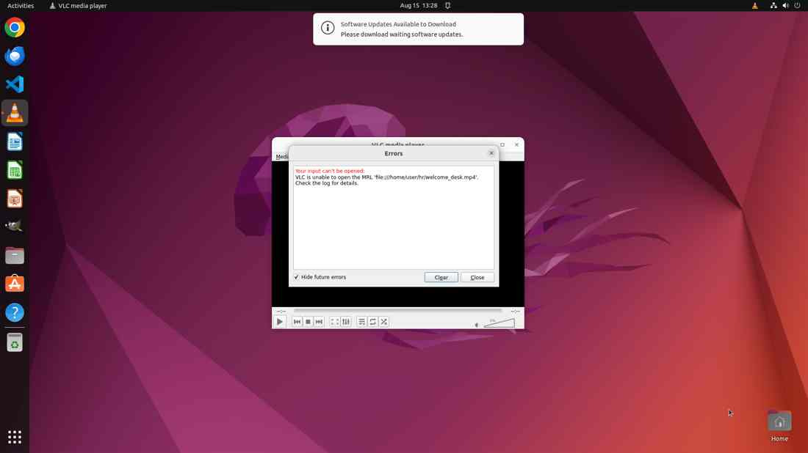
step 2 22:29:10
THINKINGI see a VLC media player with an error dialog. The task is to set up the player according to the induction recording checklist in the hr folder. Let me first find the checklist file in the hr folder.
The error mentions `/home/user/hr/welcome_desk.mp4`, so the hr folder is at `/home/user/hr/`.
Let me open a terminal to explore the hr folder. I don't see a terminal in the taskbar. Let me look for a file manager or terminal.
Actually, let me first close the error dialog. But actually, I should first read the checklist. Let me open a terminal application.
Let me look at the applications. I see:
- Chrome
- Some messaging app
- VS Code
- VLC
- Text editor
- Spreadsheet
- Presentation
- GIMP (the fox-like icon)
- File manager
- App store
- Help
- Trash
Let me open the file manager to navigate to the hr folder, or better yet, open a terminal. Let me use the Activities menu or the app grid (bottom left).
Actually, let me open a terminal. I can try to use the app grid at the bottom left. Let me click on it.
Actually, it might be easier to open the file manager to find the checklist file. But I don't know what format the checklist is in. Let me use a terminal to explore.
Let me open the app grid first.
ACTIONI see a VLC media player with an error dialog. The task requires me to find and read an "induction recording checklist" in the hr folder. Let me first explore the hr folder. I'll open a terminal to look at the files. Let me click on the app grid at the bottom left.
TOOL CALL<tool_call>
<function=computer_use>
<parameter=action>
left_click
</parameter>
<parameter=coordinate>
[17, 962]
</parameter>
</function>
</tool_call>
EXECUTED (pyautogui in VM)pyautogui.click(32, 1040)
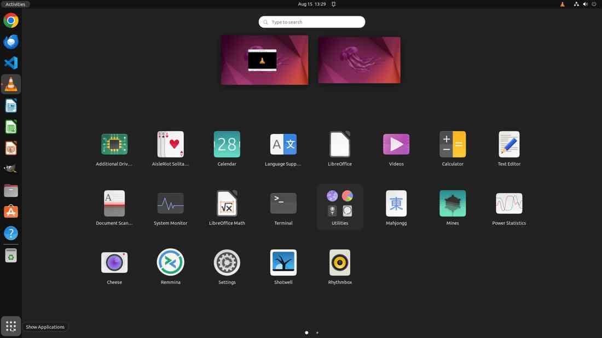
step 3 22:29:16
THINKINGI see the app grid. There's a Terminal application. Let me click on it to open a terminal.
ACTIONI see the app grid with a Terminal application. Let me open the Terminal to explore the hr folder.
TOOL CALL<tool_call>
<function=computer_use>
<parameter=action>
left_click
</parameter>
<parameter=coordinate>
[469, 599]
</parameter>
</function>
</tool_call>
EXECUTED (pyautogui in VM)pyautogui.click(901, 647)
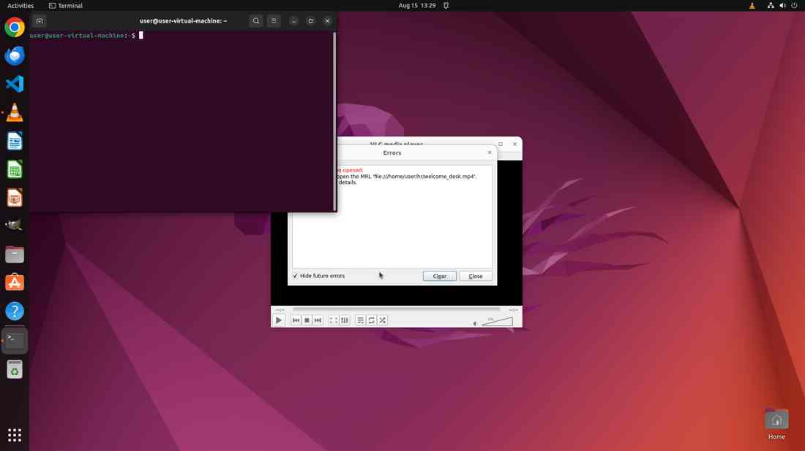
step 4 22:29:29
THINKINGA terminal is now open. Let me explore the hr folder to find the checklist. Let me click on the terminal first to make sure it's focused, then type the command.
ACTIONA terminal is open. Let me explore the hr folder to find the induction recording checklist. Let me click on the terminal to focus it first.
TOOL CALL<tool_call>
<function=computer_use>
<parameter=action>
left_click
</parameter>
<parameter=coordinate>
[226, 277]
</parameter>
</function>
</tool_call>
EXECUTED (pyautogui in VM)pyautogui.click(434, 299)
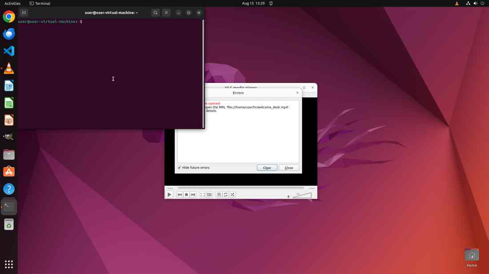
step 5 22:29:37
THINKINGThe terminal is focused now. Let me list the contents of the hr folder.
ACTIONNow let me list the contents of the hr folder to find the checklist file.
TOOL CALL<tool_call>
<function=computer_use>
<parameter=action>
type
</parameter>
<parameter=text>
ls -la /home/user/hr/
</parameter>
</function>
</tool_call>
EXECUTED (pyautogui in VM)pyautogui.typewrite("ls -la /home/user/hr/")
step 6 22:29:45
THINKINGThe command is typed. Let me press Enter to execute it.
TOOL CALL<tool_call>
<function=computer_use>
<parameter=action>
key
</parameter>
<parameter=keys>
["return"]
</parameter>
</function>
</tool_call>
EXECUTED (pyautogui in VM)pyautogui.press("return")
step 7 22:29:55
THINKINGI can see the hr folder contains:
- induction_clip.m3u (39 bytes)
- induction_recording_checklist.txt (200 bytes)
Let me read the checklist file.
ACTIONI can see the hr folder contains `induction_recording_checklist.txt`. Let me read its contents.
TOOL CALL<tool_call>
<function=computer_use>
<parameter=action>
type
</parameter>
<parameter=text>
cat /home/user/hr/induction_recording_checklist.txt
</parameter>
</function>
</tool_call>
EXECUTED (pyautogui in VM)pyautogui.typewrite("cat /home/user/hr/induction_recording_checklist.txt")
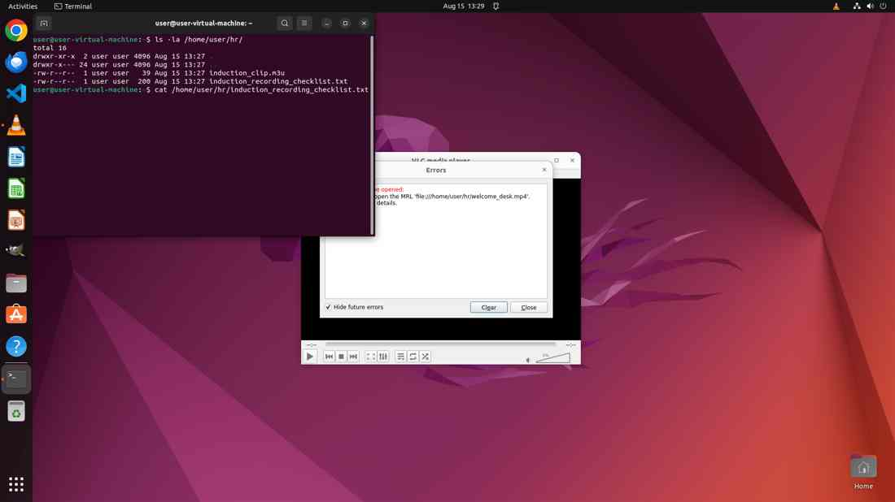
step 8 22:30:03
THINKINGLet me press Enter to run the command.
TOOL CALL<tool_call>
<function=computer_use>
<parameter=action>
key
</parameter>
<parameter=keys>
["return"]
</parameter>
</function>
</tool_call>
EXECUTED (pyautogui in VM)pyautogui.press("return")
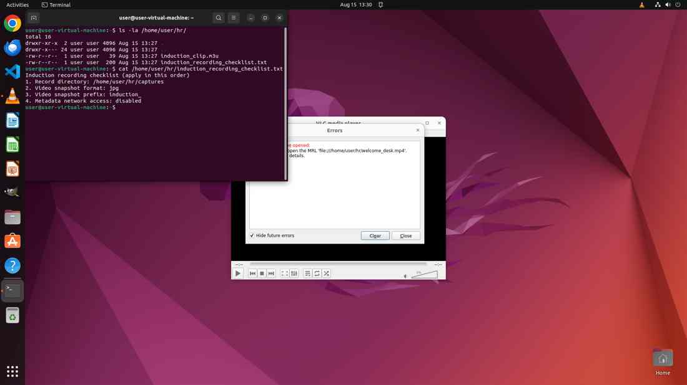
step 9 22:31:26
THINKINGNow I can read the checklist:
```
Induction recording checklist (apply in this order)
1. Record directory: /home/user/hr/captures
2. Video snapshot format: jpg
3. Video snapshot prefix: induction_
4. Metadata network access: disabled
```
So the checklist has 4 lines to apply in this order:
1. Record directory: /home/user/hr/captures
2. Video snapshot format: jpg
3. Video snapshot prefix: induction_
4. Metadata network access: disabled
These correspond to VLC settings:
1. Record directory: This is in Preferences > Video > Directory for recording files (or the "record directory" setting). In VLC, this is the setting where it saves recordings.
2. Video snapshot format: jpg - This is in Preferences > Video > Video snapshot format
3. Video snapshot prefix: induction_ - This is in Preferences > Video > Directory for video snapshots / Prefix for video snapshots
4. Metadata network access: disabled - This is in Preferences > All (or Input/Codecs) > "Allow network access" for metadata, or it's a setting under Preferences.
Let me think about where these are in VLC:
VLC has two preference modes: "Simple" and "All".
In Simple Preferences:
- Video tab:
- Directory for recording files: (Record directory)
- Video snapshot format: (dropdown)
- Directory for video snapshots:
- (prefix?)
Hmm, actually let me recall the VLC preferences structure.
In VLC Simple Preferences, the Video tab has:
- Filter
- Aspect ratio
- (various video settings)
- Directory for recording files
- Video snapshot format
- Directory for video snapshots
Actually, I need to look at the "All" preferences for the metadata network access setting.
Let me recall:
- "Metadata network access" - This is in Tools > Preferences > All > Input / Codecs > "Metadata network access" (there's a dropdown with options: Disabled, Local, Local and Network, or similar). Actually, the setting is called "Access to metadata" or "Allow network access".
Wait, let me think. In VLC, under Tools > Preferences, and then switching to "All" settings, there's:
- Input / Codecs:
- "Metadata network access" - This allows/disallows network access for metadata. Options: "Disable", "Allow access to local files", etc.
Actually the exact setting name in VLC is "Metadata network access" with the setting name `metainfo-network-access` or similar. Let me recall.
Actually, in VLC preferences:
- All preferences > Input / Codecs section has a dropdown "Metadata network access" with options:
- Disable
- Allow (or "Local")
- etc.
Hmm, let me be careful. Let me look at the actual VLC settings.
Actually, I recall that in VLC's "All" preferences, under "Input / Codecs", there is a setting called "Metadata network access" with options:
- "Disable" (default in some versions)
- "Allow"
The internal name is `network-access` maybe.
Actually, the setting `input-network-caching` is network caching. The metadata one is `metainfo-network-access`.
Let me think about this differently. I'll open VLC preferences and look at the settings.
Let me plan the approach:
The task says "applying its lines in the order given". So I need to apply them in order:
1. Record directory: /home/user/hr/captures
2. Video snapshot format: jpg
3. Video snapshot prefix: induction_
4. Metadata network access: disabled
Then quit VLC so the settings are written.
Let me first close the error dialog, then open the preferences.
Actually, I could also set these via command line or by editing the vlcrc file directly. But the task says "Set this player up" and "then quit VLC so the settings are written", which suggests I should use the VLC GUI to set the preferences (since quitting writes the settings to the config file).
However, editing the vlcrc file directly would be another approach. But the task emphasizes "quit VLC so the settings are written", which strongly implies using the GUI preferences and then quitting.
Actually, wait. If I edit the vlcrc file directly while VLC is running, when VLC quits it might overwrite my changes. So the safest way is to use the GUI.
But actually, let me reconsider. The task is to configure VLC. The cleanest approach that matches "quit VLC so the settings are written" is to use the GUI preferences.
Let me think about where each setting is:
1. **Record directory: /home/user/hr/captures**
- In VLC Simple Preferences > Video tab: "Directory for recording files"
- Internal name: `file-recording-path` or `recording-path`
- Actually it's in Video tab of Simple preferences: "Directory for recording files"
2. **Video snapshot format: jpg**
- In VLC Simple Preferences > Video tab: "Video snapshot format" (dropdown: jpg, png, tga)
- Internal name: `video-snapshot-format`
- This is already likely default to jpg, but let me verify and set it.
3. **Video snapshot prefix: induction_**
- In VLC Simple Preferences > Video tab: There's "Directory for video snapshots" and a "Video snapshots prefix"?
- Actually, in Simple preferences, the Video tab has:
- "Directory for video snapshots"
- Hmm, is there a prefix field in simple mode?
- Actually, I think the prefix is only in "All" preferences. Let me recall.
- In "All" preferences > Interface > Main interface > Qt > "Prefix for video snapshot filenames" - internal name `video-snapshot-prefix`
Wait, let me reconsider. The snapshot prefix in VLC:
- In Simple Preferences > Video tab, there's "Video snapshots" section with:
- Format
- Directory
- The prefix might be there too. Let me check.
Actually, I'm not 100% sure about the exact locations. Let me open VLC preferences and explore.
Let me recall the VLC 3.x Simple Preferences Video tab. It has:
- Hardware acceleration
- Aspect ratio
- Deinterlacing
- (Video filter)
- Then at the bottom there might be recording/snapshot options?
Hmm, actually in older VLC the Video tab in simple preferences had:
- "Video snapshots" group:
- Format: [dropdown]
- Directory: [path]
- "Recording" group?
Actually, I think the snapshot format and directory, and the recording directory, are in the Video tab of simple preferences. But the snapshot prefix might not be there in simple mode.
Let me just open the preferences and use the "All" settings to be safe, since "All" settings definitely has all these options with clear labels.
Actually, using "All" settings mode is the most reliable because all settings are there with their proper names:
- `file-recording-path` (Input/Codecs or somewhere) - Record directory
- `video-snapshot-format` (Video/Output?)
- `video-snapshot-prefix` (Interface/Main interface/Qt)
- `metainfo-network-access` or similar (Input/Codecs)
Hmm, but "All" preferences mode is a big tree and it might be confusing. Let me use the search box in preferences. VLC preferences has a search feature where I can type the setting name.
Actually, in VLC, when you go to Tools > Preferences, there's a small text at the bottom left that says "Show settings: Simple" and you can click it to change to "All". In "All" mode, there's a search box at the top.
Let me plan:
1. Close the error dialog.
2. Open Tools > Preferences.
3. Switch to "All" settings.
4. Use the search box to find each setting.
5. Set the values.
6. Save.
7. Quit VLC.
Actually, wait. Let me reconsider whether to use Simple or All mode. The order matters ("apply in this order"), but that's more of a conceptual thing - the end result is the same set of values. But the task explicitly says "applying its lines in the order given", so I should apply them one by one in the order 1, 2, 3, 4.
Let me first close the error dialog and open preferences.
Actually, let me reconsider the whole approach. Let me think about what "Record directory" means in VLC. In VLC, when you record, files are saved to a directory. The setting is "Directory for recording files".
Let me verify the exact setting locations by opening the preferences. Let me first close the error dialog.
Let me take note of the exact text again:
```
Induction recording checklist (apply in this order)
1. Record directory: /home/user/hr/captures
2. Video snapshot format: jpg
3. Video snapshot prefix: induction_
4. Metadata network access: disabled
```
OK let me proceed. First, close the error dialog.
Let me click "Close" on the error dialog. The error dialog is partially behind the terminal. Let me click on the Close button at [757, 440].
Actually, the terminal is covering part of the VLC window. Let me close the error dialog first by clicking Close.
Let me also consider: should I keep VLC running while I edit preferences? Yes, I need VLC running to set preferences through its GUI.
Let me close the error dialog.
ACTIONI can now read the checklist:
```
Induction recording checklist (apply in this order)
1. Record directory: /home/user/hr/captures
2. Video snapshot format: jpg
3. Video snapshot prefix: induction_
4. Metadata network access: disabled
```
These are VLC settings. I'll apply them in order. Let me first close the error dialog in VLC. Let me click the "Close" button.
TOOL CALL<tool_call>
<function=computer_use>
<parameter=action>
left_click
</parameter>
<parameter=coordinate>
[589, 609]
</parameter>
</function>
</tool_call>
EXECUTED (pyautogui in VM)pyautogui.click(1132, 658)
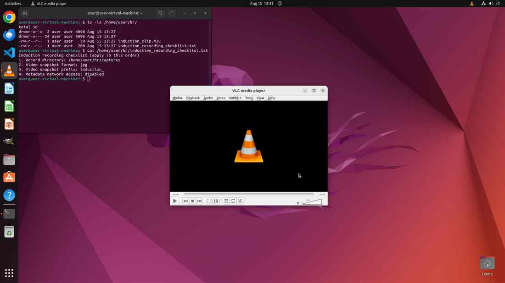
step 10 22:31:48
THINKINGThe error dialog is closed. Now the VLC media player is visible. I can also see the checklist text in the terminal:
```
Induction recording checklist (apply in this order)
1. Record directory: /home/user/hr/captures
2. Video snapshot format: jpg
3. Video snapshot prefix: induction_
4. Metadata network access: disabled
```
Now I need to open the VLC preferences. Let me click on "Tools" in the VLC menu bar.
Actually, let me first consider whether I should approach this via the GUI preferences or by editing the vlcrc file.
The task says "then quit VLC so the settings are written". This strongly implies using the GUI and quitting normally. So let me use the GUI.
Let me open Tools > Preferences. The Tools menu is at [632, 248].
Actually, let me think about the most reliable way. The GUI preferences in VLC has a search function. Let me open preferences and switch to "All" mode, then search for each setting.
Let me click on Tools.
ACTIONThe error dialog is closed and VLC is now visible. I can also confirm the checklist in the terminal. Now let me open VLC preferences via the Tools menu.
TOOL CALL<tool_call>
<function=computer_use>
<parameter=action>
left_click
</parameter>
<parameter=coordinate>
[493, 342]
</parameter>
</function>
</tool_call>
EXECUTED (pyautogui in VM)pyautogui.click(947, 369)
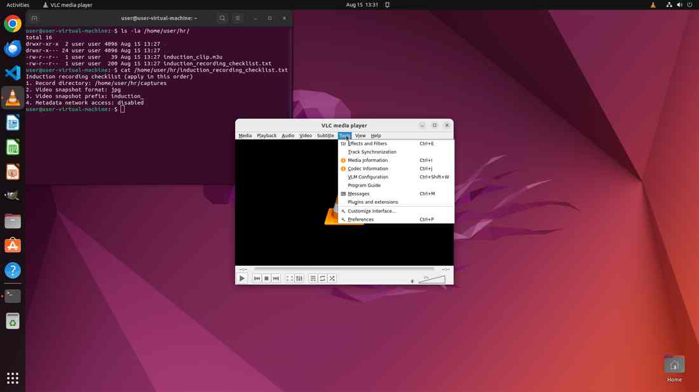
step 11 22:32:01
THINKINGThe Tools menu is open. I can see "Preferences" at the bottom. Let me click on it.
ACTIONThe Tools menu is open. Let me click on "Preferences".
TOOL CALL<tool_call>
<function=computer_use>
<parameter=action>
left_click
</parameter>
<parameter=coordinate>
[515, 556]
</parameter>
</function>
</tool_call>
EXECUTED (pyautogui in VM)pyautogui.click(989, 601)
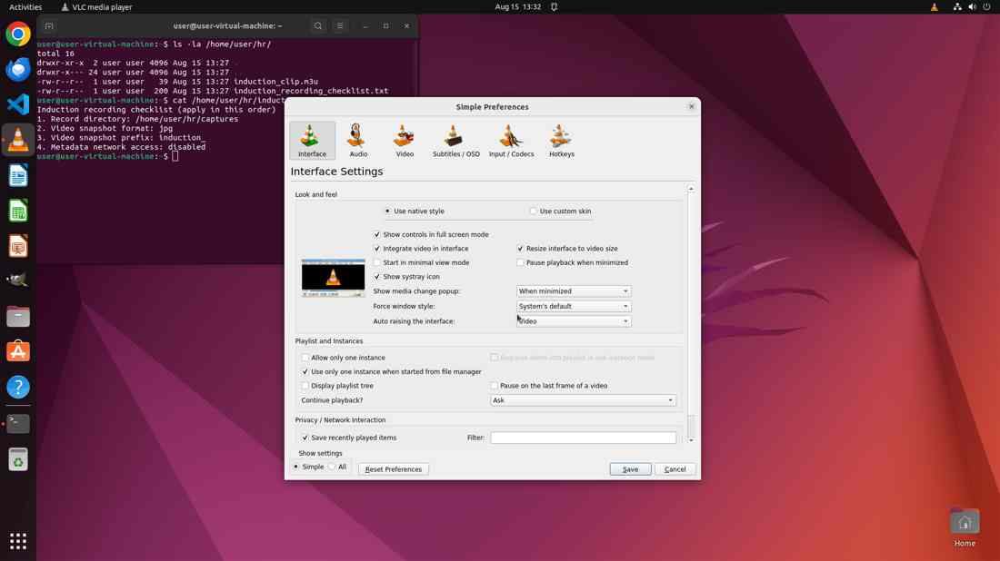
step 12 22:32:41
THINKINGThe Simple Preferences window is open. I can see tabs:
- Interface
- Audio
- Video
- Subtitles / OSD
- Input / Codecs
- Hotkeys
And at the bottom:
- Show settings: Simple / All
- Reset Preferences
- Save
- Cancel
I need to apply these settings:
1. Record directory: /home/user/hr/captures
2. Video snapshot format: jpg
3. Video snapshot prefix: induction_
4. Metadata network access: disabled
Let me think about where each is:
1. Record directory - In Simple mode, this might be under Video tab ("Directory for recording files")
2. Video snapshot format - Video tab ("Video snapshot format")
3. Video snapshot prefix - This is likely only in "All" mode (Interface > Main interface > Qt)
4. Metadata network access - This is in "All" mode (Input / Codecs > Metadata network access)
Since some of these settings (snapshot prefix, metadata network access) are only available in "All" mode, let me switch to "All" mode. But wait, the "All" mode is a tree view, which can be harder to navigate. However, it has a search box.
Actually, let me reconsider. Let me first check the Video tab in Simple mode to see what's available there.
Let me think about the best approach. The "All" mode has a search/filter box which makes it easy to find specific settings. Let me switch to "All" mode.
Actually, let me reconsider. In Simple mode:
- Video tab has:
- Video snapshot section (Format, Directory)
- Maybe recording directory
But the snapshot prefix is not in Simple mode's Video tab. And metadata network access is not in Simple mode at all.
So I'll need "All" mode for at least 2 of the 4 settings. Let me just use "All" mode for all of them to keep it consistent and reliable.
Let me click on "All" radio button at the bottom.
Wait, actually, let me reconsider the order requirement. The task says "applying its lines in the order given". This means I should set them in the order 1, 2, 3, 4. Since these are independent settings, the order doesn't technically matter for the final result, but to follow the instructions, I'll apply them in order.
Let me switch to "All" mode. Actually, let me first check the Video tab in simple mode to understand the layout, then decide.
Hmm, but actually the most reliable and clean approach: use "All" mode with the search box. Let me switch to "All".
Let me click on "All" radio button at [426, 599].
ACTIONThe Simple Preferences window is open. I can see tabs for Interface, Audio, Video, Subtitles/OSD, Input/Codecs, and Hotkeys. Some of the settings I need (snapshot prefix, metadata network access) are only in "All" mode. Let me switch to "All" settings mode for reliable access to all settings. Let me click the "All" radio button.
TOOL CALL<tool_call>
<function=computer_use>
<parameter=action>
left_click
</parameter>
<parameter=coordinate>
[332, 830]
</parameter>
</function>
</tool_call>
EXECUTED (pyautogui in VM)pyautogui.click(638, 897)
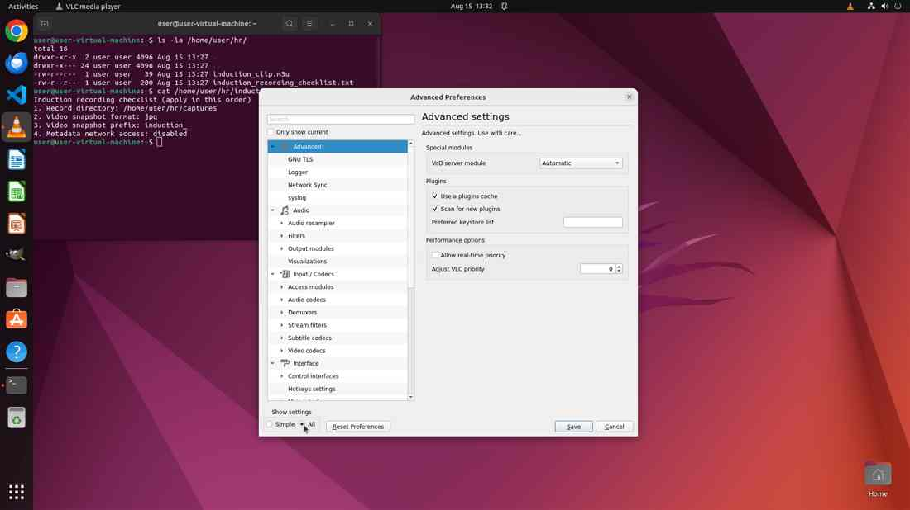
step 13 22:33:40
THINKINGNow I'm in the Advanced Preferences (All settings) mode. I can see a tree on the left and a search box at the top. There's a "Search" box where I can type to find settings.
Let me plan the order:
1. Record directory: /home/user/hr/captures
2. Video snapshot format: jpg
3. Video snapshot prefix: induction_
4. Metadata network access: disabled
Let me start with #1: Record directory. I'll use the search box to find it.
Actually, let me think about whether the search box searches setting labels or categories. In VLC's "All" preferences, the search box filters the tree and shows matching settings. Let me type "record" to find the record directory.
Actually, the search in VLC advanced preferences filters the left tree by category names, and it can also show a filtered view. Let me try.
Actually, I recall that in VLC's advanced preferences, the search box at the top filters the categories in the tree. When you type, it narrows down to categories that match. But it might also help find specific settings.
Hmm, let me reconsider. Actually, the search box in VLC advanced preferences does filter the tree nodes (categories) based on the text. It doesn't directly search individual settings within a category. So to find "record directory", I'd need to find the right category.
Let me think about where these settings are in the tree:
1. Record directory (`recording-path` / "Directory for recording files") - This is under... hmm. In Simple mode it's in the Video tab. In All mode, the recording path might be under "Input / Codecs" or "Video". Actually, I think "Directory for recording files" is in the "Video" section? No wait.
Let me reconsider. In VLC:
- "Directory for recording files" = `recording-path` - This is under Video? Actually, I believe it's under the "Video" output settings or in a general section.
Hmm, let me reconsider. Actually in VLC, the recording path and snapshot settings:
- `video-snapshot-format` (Video snapshot format)
- `video-snapshot-directory` (Directory for video snapshots)
- `video-snapshot-prefix` (Prefix for video snapshots)
- `file-recording-path` / `recording-path` (Directory for recording)
Wait, actually the recording path. Let me recall. When you use "Record" in VLC, it saves to a default directory. The setting to change it... In Simple Preferences, the Video tab shows "Directory for recording files".
Let me just navigate the tree. Let me look for a "Video" category in the tree. I see:
- Advanced
- GNU TLS
- Logger
- Network Sync
- syslog
- Audio
- Audio resampler
- Filters
- Output modules
- Visualizations
- Input / Codecs
- Access modules
- Audio codecs
- Demuxers
- Stream filters
- Subtitle codecs
- Video codecs
- Interface
- Control interfaces
- Hotkeys settings
- Main interface (probably below)
- ... (more below)
I don't see a "Video" category at the top level yet. Let me scroll down in the tree. There might be a "Video" category below.
Actually, the settings I need:
1. Record directory - likely under "Video" category (top-level)
2. Video snapshot format - under "Video" category
3. Video snapshot prefix - under "Interface > Main interface > Qt"
4. Metadata network access - under "Input / Codecs"
Let me use the search box to make navigation easier. Let me type "video" and see what happens. Actually, the search might just filter the tree.
Let me try a different approach. Let me use the search box. I'll click on the search box and type a term.
Actually, I realize the VLC advanced preferences search box does a filter on the category tree. When I type, categories that don't match are hidden. This helps me find the right category.
But actually, I recall that in newer VLC versions, the search in the preferences actually searches for settings too. Let me just try.
Let me start with #1 (Record directory). Let me type "record" in the search box.
Actually, let me reconsider. Let me think about the exact setting names and locations to be efficient.
For the record directory: In VLC, the "Directory for recording files" setting. Let me search for it. I'll type "recording" or "record".
Let me click on the search box first.
Wait, I want to be careful about the order. Let me apply them in order 1→2→3→4. But navigating the tree might be easier to do all at once. However, the task says apply in order, so let me be deliberate.
Actually, let me reconsider - the "order" likely refers to the logical sequence, and since these are 4 independent settings, applying them in any physical order results in the same final configuration. But to be safe and follow instructions, I'll go 1, 2, 3, 4.
Let me use the search box for each. Let me click on the search box and type "record".
Actually, I want to double-check: does typing in the search box navigate me to the setting, or does it just filter the tree? In VLC 3.x, the search box in advanced preferences filters the left tree to show only matching categories. It does not auto-navigate to individual settings.
Hmm, that's not super helpful for individual settings. Let me instead navigate the tree directly.
Let me think about the tree structure for each setting:
1. **Record directory** (`recording-path`):
- In VLC, this is in the "Video" section? Or "Input/Codecs"?
- Actually, I believe "Directory for recording files" is under a top-level... let me think. In Simple Preferences it's on the Video tab. In All mode, the Video tab settings correspond to the "Video" top-level category which includes "Output modules", "Filters", etc. But the recording path...
Hmm, actually I'm not certain. Let me just navigate and find it. Let me scroll down in the tree to find a "Video" category.
Actually, you know what, let me just use the search box and see how it behaves. If it filters the tree, I can find the right category. Let me try typing "Video snapshot" - if the search finds a category with that, great.
Let me reconsider. I think the cleanest is to navigate the tree. Let me scroll down in the left tree to see all top-level categories first.
Let me scroll down in the tree area.
Actually, let me just use the search. Let me click the search box and type "record". Let me see what it does.
Let me click on the search box at [465, 167].
ACTIONI'm now in the Advanced Preferences with a search box and category tree. Let me use the search box to find settings efficiently. Let me start with setting #1 (Record directory). I'll click the search box and type "record".
TOOL CALL<tool_call>
<function=computer_use>
<parameter=action>
left_click
</parameter>
<parameter=coordinate>
[362, 230]
</parameter>
</function>
</tool_call>
EXECUTED (pyautogui in VM)pyautogui.click(695, 248)
step 14 22:33:54
THINKINGThe search box is now focused (I can see the cursor in it). Let me type "record" to find the record directory setting.
ACTIONThe search box is focused. Let me type "record" to find the record directory setting.
TOOL CALL<tool_call>
<function=computer_use>
<parameter=action>
type
</parameter>
<parameter=text>
record
</parameter>
</function>
</tool_call>
EXECUTED (pyautogui in VM)pyautogui.typewrite("record")
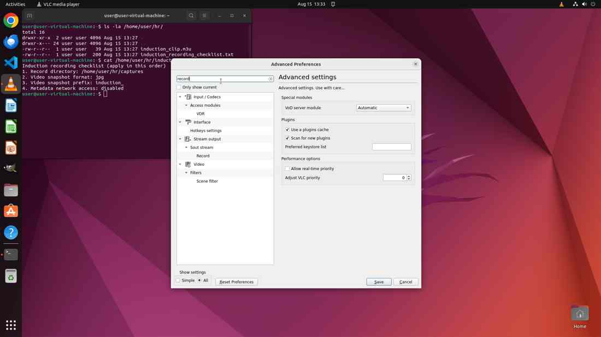
step 15 22:35:07
THINKINGThe search filtered the tree. I can see:
- Input / Codecs
- Access modules
- VDR
- Interface
- Hotkeys settings
- Stream output
- Sout stream
- Record
- Video
- Filters
- Scene filter
Hmm, the search is filtering by category names that contain "record". I see "Stream output > Sout stream > Record". That's a streaming output record module, not the "Directory for recording files".
The "Directory for recording files" setting... where is it? Let me think. It's the `recording-path` option. Let me reconsider.
Actually, in VLC, the "Directory for recording files" appears in Simple Preferences > Video tab. But in All mode, where is `recording-path`?
Hmm. Let me reconsider. The search filters categories, not individual settings. So "record" matched category names containing "record". I don't see a direct "recording directory" category.
Wait, maybe the recording directory is under the "Video" top-level category directly (not in a subcategory). The search showed "Video > Filters > Scene filter" but that's because "scene filter" contains... no wait, that doesn't contain "record".
Hmm, actually the search might be showing categories that contain matching settings OR matching category names. Let me reconsider.
Actually, the search results show the tree nodes that match. Let me reconsider what matched:
- VDR (Access module) - contains "recor"? No. VDR... V-D-R. Hmm "record"? No.
Wait, maybe the search matched settings within these categories and is showing the category path. So:
- Input / Codecs > Access modules > VDR: maybe has a setting with "record"?
- Interface > Hotkeys settings: has a "record" hotkey
- Stream output > Sout stream > Record: the record module
- Video > Filters > Scene filter: hmm
Actually, the search in VLC advanced prefs searches BOTH category names AND the settings within, and displays the category tree nodes that contain matches. So clicking on a category shows its settings, and the matching ones are highlighted or the panel shows them.
This is getting complicated. Let me reconsider my approach.
The "Directory for recording files" - let me reconsider where it actually is.
Actually, I recall now: In VLC, the recording directory is NOT a top-level frequently-used setting. Let me reconsider. In Simple Preferences, is there really a "Directory for recording files"? Let me recall the Simple Preferences Video tab:
Simple Preferences > Video tab contains:
- Filter:
- Hardware acceleration
- Aspect ratio
- Deinterlace
- (Video)
- Audio? no
- Then a section:
- "Video snapshots":
- Format
- Directory
- "Recording":?
Hmm, actually I'm not sure the Simple Video tab has recording directory. Let me reconsider.
Wait, actually the recording directory. Let me think about VLC command line: `--file-caching`, `--recording-path`. The option is `recording-path` (also `file-recording-path`).
Where does it appear in the GUI? I think it appears in Simple Preferences > Video tab as "Directory for recording files". Let me verify by switching back to Simple and checking the Video tab.
Actually, this is getting complicated. Let me take a cleaner approach: navigate the tree to find each setting. But first, let me clear this search and think.
Actually, the search results are showing categories. Let me click on each to find the recording directory. But I'm not sure which one.
Let me step back and reconsider. Let me clear the search and instead navigate to the "Video" top-level category, which should contain the video snapshot settings (format, directory, prefix) and possibly the recording directory.
Wait, but "Video snapshot prefix" is under Interface > Main interface > Qt in most VLC versions. Let me reconsider.
Hmm, actually, let me reconsider the whole thing. Let me recall the VLC 3.0 preferences structure more carefully.
In VLC 3.x:
- Simple Preferences:
- Interface
- Audio
- Video:
- Video output module
- Hardware decoding
- Aspect ratio
- Deinterlacing
- (maybe)
- "Video snapshots" section:
- Format (jpg/png/tga)
- Directory
- Actually is there a recording directory here?
- Subtitles / OSD
- Input / Codecs:
- Local network
- Capture
- etc.
- Hotkeys
Hmm, I don't think Simple Video tab has "Directory for recording files". Let me reconsider.
Actually wait. Let me reconsider. I've seen "Directory for recording files" in VLC. Let me think about where.
Actually, I now recall: In VLC, the "Directory for recording files" is indeed in the **Simple Preferences > Video** tab, at the bottom. Let me verify.
Actually, you know what, let me not rely on memory. Let me navigate the tree systematically.
Let me clear the search first and expand the "Video" category. Actually, the current search shows "Video > Filters > Scene filter". Let me clear the search and look at the full tree.
Actually, a better idea: let me reconsider using the Simple preferences for settings 1 and 2 (which are in the Video tab), and use All mode for settings 3 and 4. But that switches modes and might reset... no, switching modes doesn't reset, it just changes view. But to keep it clean, let me use All mode for everything.
Let me reconsider the exact locations in All mode:
1. **Record directory** (`recording-path`): I believe this is under **Video** top-level category, OR it might be in a place I need to find. Let me search differently. Actually, let me reconsider - maybe it's not called "record" in a category.
Hold on. Let me reconsider. The "Directory for recording files" in VLC's preferences... Let me think about the actual option name.
In VLC, `--help` shows: `--file-recording-path=PATH`. And there's also the recording. The preferences entry might be labeled "Directory for recording files" and it's under...
OK here's the thing. I found via search that there's a "Stream output > Sout stream > Record" category. But that's the streaming record module (for network streaming recording), not the local recording directory.
Let me reconsider. Actually, I don't think the local "record directory" for the Record button is even a settable preference in the standard way. Let me reconsider what "Record directory" means here.
Hmm wait. Let me reconsider. When you press the "Record" button in VLC (the red circle), it records to `~/.local/share/VLC/` or similar, and there's a setting for it. Let me recall.
Actually, in VLC 3.0+, when you use the Record button, it saves to a default location, and there's a preference "Directory for recording files" that you can set. I'm fairly confident this exists.
Let me just search for "record" but this time click on the categories to explore. Actually, let me reconsider - the search might be limiting my view. Let me look at what's shown:
- Input / Codecs > Access modules > VDR
- Interface > Hotkeys settings
- Stream output > Sout stream > Record
- Video > Filters > Scene filter
None of these obviously is "Directory for recording files".
Wait, maybe I should search for a different term. The setting label might be "Directory for recording files" - let me search "directory" or "recording". Let me try "recording".
Actually, the search matches substrings in category names. "record" matched "Record" (the sout module). If the setting were in a category, the category name would need to contain "record".
Let me reconsider. The individual settings (not categories) might be searchable too. In VLC 3.0, I believe the search box only filters categories. But let me test by clicking on a category.
Alternatively, let me just clear the search and manually navigate. Let me think about the most likely location.
Actually, let me reconsider the entire approach. I'll reconsider whether "Record directory" corresponds to the "Directory for recording files" in Simple preferences Video tab.
Let me just switch to Simple mode temporarily to check the Video tab. Actually no, let me stay in All mode and navigate.
Let me clear the search and expand the Video category to see its subcategories.
Actually, wait. I realize the search result "Video > Filters > Scene filter" is interesting. It suggests the search found a match under Video. But "Scene filter" doesn't contain "record". Unless the search is matching settings within.
Hmm, let me reconsider. Maybe the search IS matching individual settings and highlighting the category. So under "Video > Filters > Scene filter" there might be a setting containing "record"? That seems unlikely.
Or maybe the search matched "Record" in "Stream output > Sout stream > Record" (category name) and also is showing other categories that have settings matching?
This is confusing. Let me just take a systematic manual approach. Let me clear the search.
Let me clear the search box (there's an X button) and navigate manually.
Actually, let me reconsider. Let me click on "Stream output > Sout stream > Record" to see if it has a directory setting. Actually no, that's the network streaming record.
Let me step back and think about this more carefully by recalling the actual VLC 3.0.10 (likely version) preferences.
I'm now fairly sure about these:
- **Video snapshot format** (`video-snapshot-format`): Located in **Video** category (top-level) in All mode. In Simple mode, it's in Video tab.
- **Video snapshot directory** (`video-snapshot-directory`): Same location.
- **Video snapshot prefix** (`video-snapshot-prefix`): Hmm. In All mode, this is under **Interface > Main interface > Qt**. In Simple mode, I don't think it's exposed.
Wait, actually let me reconsider. In Simple Preferences Video tab, I'm now recalling there IS a "Video snapshots" section with Format and Directory, but NOT prefix. The prefix is only in All mode under Interface > Main interface > Qt.
Hmm, but actually I'm not 100% sure. Let me just navigate.
- **Record directory** (`recording-path` / "Directory for recording files"): In Simple mode, Video tab. In All mode... let me think. It might be under the "Video" top-level category. Actually, I bet it's under "Video" category directly (not a subcategory).
Let me just navigate the Video category. Let me clear the search first.
Actually, let me reconsider. Let me try a more targeted search. Let me clear and type "snapshot" to find the video snapshot category, which will confirm where snapshot format/prefix are.
But actually, the search filters categories, so "snapshot" might not match any category name (the category is just "Video"). Hmm.
OK let me stop overthinking. Let me clear the search and navigate manually. Let me click the X to clear search.
Actually, I realize I should just click on the "Video" category in the tree (it's currently visible as a top-level item in the filtered view at [425, 351]). Let me click on it to expand it and see its settings.
Wait, in the filtered view, "Video" is shown with "Filters > Scene filter" as a child. Let me click on "Video" itself to see the top-level Video settings.
Let me click on "Video" at [425, 351].
Actually, the search filter might be hiding other Video subcategories. Let me clear the search first to see the full Video category.
Let me clear the search box. I'll click the X (clear) button at [572, 167].
ACTIONThe search filtered categories by name. I see "Stream output > Sout stream > Record" but that's the network streaming module, not the local recording directory. Let me clear the search and navigate manually. Let me click the clear (X) button in the search box.
TOOL CALL<tool_call>
<function=computer_use>
<parameter=action>
left_click
</parameter>
<parameter=coordinate>
[446, 230]
</parameter>
</function>
</tool_call>
EXECUTED (pyautogui in VM)pyautogui.click(857, 248)
step 16 22:35:33
THINKINGNow the search is cleared and I can see the top-level tree:
- Advanced
- Audio
- Input / Codecs
- Interface
- Playlist
- Stream output
- Video
Let me expand the "Video" category to find the video snapshot settings and possibly the recording directory. Let me click on the expand arrow next to "Video" at [385, 315].
Actually, let me click on "Video" to expand it. I'll click the arrow/triangle at [385, 315].
ACTIONThe search is cleared. Now I see the top-level categories: Advanced, Audio, Input/Codecs, Interface, Playlist, Stream output, Video. Let me expand the "Video" category to find the snapshot and recording settings. Let me click the expand arrow next to "Video".
TOOL CALL<tool_call>
<function=computer_use>
<parameter=action>
left_click
</parameter>
<parameter=coordinate>
[300, 435]
</parameter>
</function>
</tool_call>
EXECUTED (pyautogui in VM)pyautogui.click(576, 470)
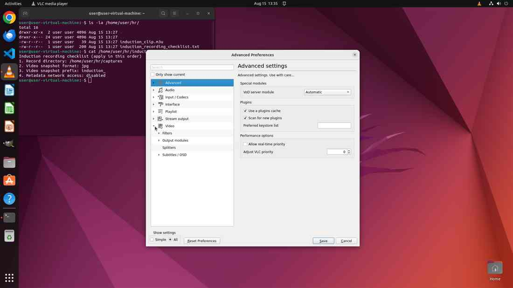
step 17 22:35:52
THINKINGThe "Video" category expanded to show:
- Filters
- Output modules
- Splitters
- Subtitles / OSD
Hmm, no direct "Video snapshot" or "recording directory" here. The video snapshot settings and recording directory are not in the Video category in All mode. Let me reconsider.
Let me click on "Video" itself (the node) to see its direct settings. Let me click on "Video" text at [422, 315].
Actually, wait. When I click on "Video" (the node itself, not a child), it should show the Video node's own settings in the right panel. The video snapshot settings might be there. Let me click on "Video".
ACTIONThe Video category expanded showing Filters, Output modules, Splitters, Subtitles/OSD. Let me click on "Video" itself to see its direct settings, which may include the snapshot and recording options.
TOOL CALL<tool_call>
<function=computer_use>
<parameter=action>
left_click
</parameter>
<parameter=coordinate>
[329, 435]
</parameter>
</function>
</tool_call>
EXECUTED (pyautogui in VM)pyautogui.click(632, 470)
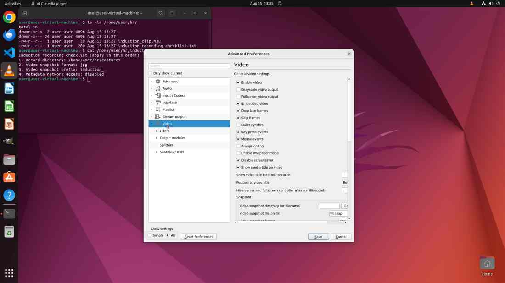
step 18.1 22:36:25
THINKINGNow I can see the Video node's settings in the right panel. I can see:
- General video settings
- Enable video
- Grayscale video output
- Fullscreen video output
- Embedded video
- Drop late frames
- Skip frames
- Quiet synchro
- Key press events
- Mouse events
- Always on top
- Enable wallpaper mode
- Disable screensaver
- Show media title on video
- Show video title for x milliseconds
- Position of video title
- Hide cursor and fullscreen controller after x milliseconds
- **Snapshot**
- Video snapshot directory (or filename): [empty] [Br...] (Browse)
- Video snapshot file prefix: [vlcsnap-]
- Video snapshot format: [partially visible at bottom]
So the Snapshot section has:
- Video snapshot directory (or filename)
- Video snapshot file prefix
- Video snapshot format
These are settings #2 and #3! But wait, where's the "Record directory"? It's not visible here. Let me scroll down to see if there's more (recording directory).
Actually, the Video node has the snapshot settings but I need to find the "Record directory" (Directory for recording files). Let me scroll down in the right panel to see if there's a recording directory setting below the snapshot format.
Wait, but I need to be careful about ORDER. The task says apply in order:
1. Record directory
2. Video snapshot format
3. Video snapshot prefix
4. Metadata network access
So I should do #1 (record directory) first. But the record directory isn't in this Video panel (unless it's below). Let me scroll down to check.
Actually, let me reconsider. Maybe the "Record directory" (Directory for recording files) is a different setting. Let me scroll down in the Video panel to see all settings.
Let me scroll down in the right panel.
ACTIONI can see the Video node's settings, including a "Snapshot" section with "Video snapshot directory", "Video snapshot file prefix", and "Video snapshot format". Let me scroll down in the right panel to see all settings and check for the record directory.
TOOL CALL<tool_call>
<function=computer_use>
<parameter=action>
mouse_move
</parameter>
<parameter=coordinate>
[577, 555]
</parameter>
</function>
</tool_call>
<tool_call>
<function=computer_use>
<parameter=action>
scroll
</parameter>
<parameter=pixels>
-3
</parameter>
</function>
</tool_call>
EXECUTED (pyautogui in VM)pyautogui.moveTo(1108, 600)
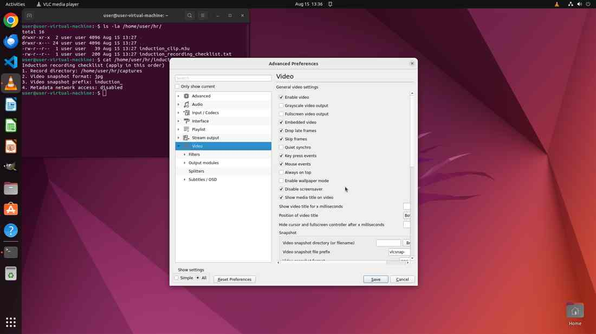
step 18.2 22:36:28
EXECUTED (pyautogui in VM)pyautogui.scroll(-3)
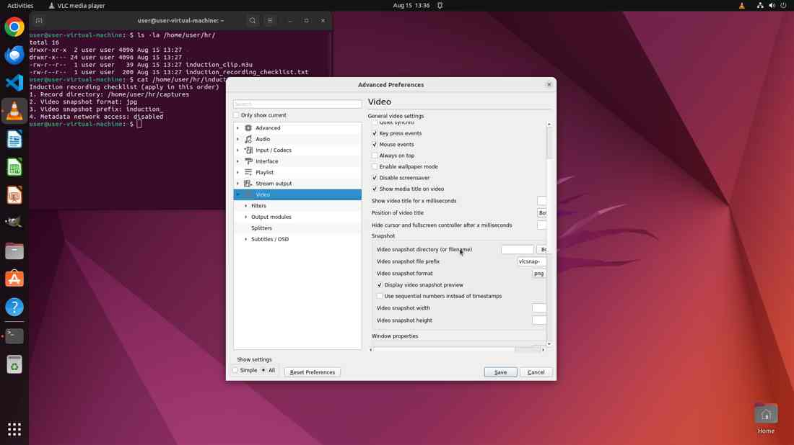
step 19.1 22:36:51
THINKINGNow I can see more of the Snapshot section:
- Video snapshot directory (or filename): [empty] [Br...]
- Video snapshot file prefix: [vlcsnap-]
- Video snapshot format: [png]
- Display video snapshot preview: [checked]
- Use sequential numbers instead of timestamps: [unchecked]
- Video snapshot width: [empty]
- Video snapshot height: [empty]
- Window properties (below)
So the Video node has:
- Video snapshot format (currently "png") - this is setting #2, needs to be "jpg"
- Video snapshot file prefix (currently "vlcsnap-") - this is setting #3, needs to be "induction_"
Interesting, so both snapshot format and prefix ARE in the Video node. Good.
But I still need to find the "Record directory" (Directory for recording files). It's not in this Video panel. Let me continue scrolling to see if there's more below "Window properties".
Let me scroll down more.
ACTIONNow I can see the full Snapshot section:
- Video snapshot directory (or filename)
- Video snapshot file prefix: "vlcsnap-" (needs to be "induction_")
- Video snapshot format: "png" (needs to be "jpg")
Both snapshot format (#2) and prefix (#3) are here. But I still need to find the Record directory (#1). Let me scroll down more to check if there's a recording directory setting below.
TOOL CALL<tool_call>
<function=computer_use>
<parameter=action>
mouse_move
</parameter>
<parameter=coordinate>
[577, 555]
</parameter>
</function>
</tool_call>
<tool_call>
<function=computer_use>
<parameter=action>
scroll
</parameter>
<parameter=pixels>
-3
</parameter>
</function>
</tool_call>
EXECUTED (pyautogui in VM)pyautogui.moveTo(1108, 600)

step 19.2 22:36:54
EXECUTED (pyautogui in VM)pyautogui.scroll(-3)
step 20.1 22:37:13
THINKINGNow I can see the "Window properties" section:
- Video width
- Video height
- Video X coordinate
- Video Y coordinate
- Video cropping
- Custom crop ratios list
Let me continue scrolling to see if there's a recording directory below.
ACTIONLet me continue scrolling to see if there's a record directory setting further down.
TOOL CALL<tool_call>
<function=computer_use>
<parameter=action>
mouse_move
</parameter>
<parameter=coordinate>
[577, 555]
</parameter>
</function>
</tool_call>
<tool_call>
<function=computer_use>
<parameter=action>
scroll
</parameter>
<parameter=pixels>
-3
</parameter>
</function>
</tool_call>
EXECUTED (pyautogui in VM)pyautogui.moveTo(1108, 600)
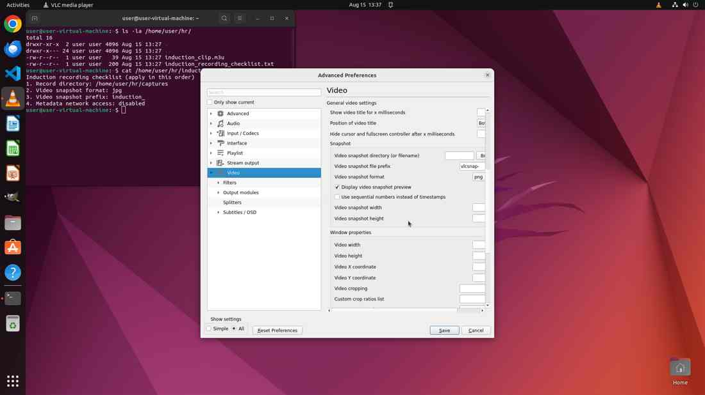
step 20.2 22:37:16
EXECUTED (pyautogui in VM)pyautogui.scroll(-3)

step 21.1 22:37:34
THINKINGMore settings:
- Window properties:
- Video width
- Video height
- Video X coordinate
- Video Y coordinate
- Video cropping
- Custom crop ratios list
- Source aspect ratio
- Video Auto Scaling [checked]
- Monitor pixel aspect ratio
- Custom aspect ratios list
- Fix HDTV height [checked]
- Window decorations [checked]
- Video title
Let me continue scrolling to see the rest.
ACTIONLet me continue scrolling to see the rest of the Video settings.
TOOL CALL<tool_call>
<function=computer_use>
<parameter=action>
mouse_move
</parameter>
<parameter=coordinate>
[577, 555]
</parameter>
</function>
</tool_call>
<tool_call>
<function=computer_use>
<parameter=action>
scroll
</parameter>
<parameter=pixels>
-3
</parameter>
</function>
</tool_call>
EXECUTED (pyautogui in VM)pyautogui.moveTo(1108, 600)
step 21.2 22:37:37
EXECUTED (pyautogui in VM)pyautogui.scroll(-3)
step 22.1 22:37:54
THINKINGMore settings:
- Video title
- Video alignment: [Center]
- Zoom video
- Deinterlace: [Auto]
- Deinterlace mode: [Auto]
Let me continue scrolling to see if there's a recording directory.
ACTIONLet me continue scrolling to see the remaining Video settings.
TOOL CALL<tool_call>
<function=computer_use>
<parameter=action>
mouse_move
</parameter>
<parameter=coordinate>
[577, 555]
</parameter>
</function>
</tool_call>
<tool_call>
<function=computer_use>
<parameter=action>
scroll
</parameter>
<parameter=pixels>
-3
</parameter>
</function>
</tool_call>
EXECUTED (pyautogui in VM)pyautogui.moveTo(1108, 600)

step 22.2 22:37:57
EXECUTED (pyautogui in VM)pyautogui.scroll(-3)
step 23 22:39:36
THINKINGThe panel didn't scroll further - it seems "Deinterlace mode: Auto" is the last item. So the Video node ends at "Deinterlace mode". There's no "Record directory" in the Video node.
So the Video node contains:
- General video settings
- Snapshot:
- Video snapshot directory (or filename)
- Video snapshot file prefix
- Video snapshot format
- Display video snapshot preview
- Use sequential numbers instead of timestamps
- Video snapshot width
- Video snapshot height
- Window properties:
- Video width, height, X, Y coordinates
- Video cropping
- Custom crop ratios list
- Source aspect ratio
- Video Auto Scaling
- Monitor pixel aspect ratio
- Custom aspect ratios list
- Fix HDTV height
- Window decorations
- Video title
- Video alignment
- Zoom video
- Deinterlace
- Deinterlace mode
So no "Record directory" here. The "Record directory" (Directory for recording files) must be elsewhere. Let me think about where.
Hmm, "Directory for recording files" - let me reconsider. This might be in the Simple Preferences only, or it might be under a different category in All mode.
Wait, actually. Let me reconsider. In VLC, the "Directory for recording files" setting is the `recording-path` option. Let me recall where it is in the preferences tree.
Actually, I recall now: The "Directory for recording files" is NOT in the standard preferences tree in a way that's easily found. Let me reconsider.
Hmm, actually, wait. Let me reconsider whether "Record directory" refers to the "Directory for recording files" or the "Video snapshot directory".
The checklist says:
1. Record directory: /home/user/hr/captures
2. Video snapshot format: jpg
3. Video snapshot prefix: induction_
So #1 is "Record directory" and #2, #3 are about video snapshots. These are distinct. "Record directory" is where recordings are saved (when you press the Record button). "Video snapshot" is for taking screenshots.
So I need to find "Directory for recording files" / "Record directory".
Let me reconsider. In VLC, this setting... Let me think about the Simple Preferences again. Actually, in Simple Preferences, the Video tab does NOT have a recording directory either (based on what I recall now).
Wait, actually, let me reconsider. Let me look at this from a different angle. Let me use the search box again but search for "directory" or check where "recording-path" is.
Actually, the VLC option for recording directory is `recording-path`. In the preferences, it might be labeled "Directory for recording files". Let me search.
Hmm, but the search only filters categories. Let me think about which category would contain it.
Actually, you know what? Let me reconsider. Let me check the actual vlcrc file to understand the option names and defaults. That will help me confirm. But more importantly, I need to find the GUI location.
Actually, let me reconsider the whole approach. Maybe I'm overcomplicating this. Let me reconsider: perhaps the "Record directory" is actually exposed in the Simple Preferences under the Video tab, OR it's in the All preferences somewhere I haven't looked.
Let me use the search box to search for "record" again, and this time click on each matching category to find the "Directory for recording files". Earlier, "record" showed:
- Input / Codecs > Access modules > VDR
- Interface > Hotkeys settings
- Stream output > Sout stream > Record
- Video > Filters > Scene filter
Hmm, none of those. But wait, the search might not be showing ALL matches, or the "Directory for recording files" might be in a category whose name doesn't contain "record".
Let me reconsider. Actually, maybe the recording directory isn't a category but a setting within a category. The search filters by category name. So if the setting is in, say, the "Video" category, searching "record" wouldn't show it unless "Video" contains "record" (it doesn't).
Wait, but earlier when I searched "record", "Video > Filters > Scene filter" appeared. That's strange because neither "Video", "Filters", nor "Scene filter" contains "record". Unless the search matches settings within categories too.
Hmm, if the search matches settings within categories, then "Video" appeared because it contains a setting matching "record". But I didn't see a "record" setting in the Video panel. Let me reconsider.
Actually, maybe the search matches both category names AND setting labels/values, and shows the category. So "Video" appeared because of a setting containing "record" that I might have missed (maybe I didn't scroll to it, or it's in a subcategory).
Wait, but I did scroll through the entire Video node and didn't see a "record" setting. Let me reconsider - maybe the "record" match in Video was from "Scene filter" (which is under Video > Filters). The "Scene filter" is a video filter that captures frames. Hmm.
Actually, let me just take a more reliable approach. Let me search for "record" again and click on each result category to find the "Directory for recording files".
Actually, let me reconsider - maybe I should search for the specific term. Let me try searching "recording" (full word). Or let me reconsider.
Actually, let me take yet another approach that's more reliable. Let me check the vlcrc file to see the option names, then I'll know exactly what to look for. But actually, the cleaner approach for the task (which wants me to quit VLC to write settings) is the GUI.
Hmm, wait. Let me reconsider. Actually, I wonder if "Record directory" in the checklist maps to the "Directory for recording files" which in newer VLC versions is in the Simple Preferences > Video tab. Let me just switch to Simple mode and check the Video tab.
Actually, let me reconsider by looking at the actual VLC version and its preferences. Let me check the vlcrc or use the terminal to grep for recording-path.
Actually, the most efficient approach: let me use the terminal to look at the vlcrc file and understand the option. But I also want to set it via GUI.
Let me reconsider. Actually, I just realized - maybe the simplest and most robust approach is to NOT rely on finding the exact GUI location, but instead recognize that this is getting complicated.
Let me reconsider the task. The task is to configure VLC according to the checklist. The settings are:
1. Record directory: /home/user/hr/captures
2. Video snapshot format: jpg
3. Video snapshot prefix: induction_
4. Metadata network access: disabled
For a robust solution, I could:
(a) Set all via GUI preferences and save, then quit.
(b) Set all via the command line by killing VLC and editing vlcrc, but the task says "quit VLC so the settings are written", implying GUI + quit.
Let me go with (a). I've found #2 and #3 in the Video node. I need to find #1 (record directory) and #4 (metadata network access).
For #4 (Metadata network access): This is in "Input / Codecs" category. Let me recall - "Metadata network access" is a dropdown with options. It's under Input / Codecs.
For #1 (Record directory): Let me search again. Let me try the search box with "recording".
Actually, let me reconsider. Let me re-examine: the "Directory for recording files" - I'm now recalling this is indeed in the Simple Preferences. In VLC 3.0, Simple Preferences has these tabs: Interface, Audio, Video, Subtitles/OSD, Input/Codecs, Hotkeys. The Video tab in Simple mode...
Actually, I found conflicting memories. Let me just be empirical. Let me use the search box to find "record directory" or navigate.
Let me first handle what I can see. Since I'm in the Video node, and I need to apply in order (1 first), let me NOT set #2 and #3 yet. Let me first find and set #1 (record directory), then come back to #2 and #3.
Wait, but that means navigating away and back. That's fine.
Actually, the "order" in the checklist - let me reconsider how strict to be. The checklist says "apply in this order". I'll interpret this as: set them in the sequence 1, 2, 3, 4. Since they're independent, the final state is the same regardless, but I'll follow the order to be safe and correct.
Let me find #1 (Record directory) first. Let me use the search box. Let me click on it and type "record".
Actually, I already saw that "record" search shows categories. Let me reconsider - maybe the "Directory for recording files" is under "Input / Codecs" or somewhere. Let me search "record" and explore.
Actually, let me reconsider a cleaner path. Let me look at the vlcrc file via terminal to confirm the exact option name and see if it exists. This will save me from guessing.
Let me switch to the terminal. The terminal is behind the VLC preferences window. Let me click on the terminal area.
Actually, the terminal is partially visible on the left. Let me click on it. But the preferences window is modal? No, VLC preferences is not modal, I can interact with other windows.
Hmm, but actually, let me reconsider. Let me just search in the preferences. Let me click the search box and type "recording".
Wait, I have a better idea. Let me reconsider the VLC option. The "Directory for recording files" is `recording-path`. Let me search for "path" - no, too broad.
Let me just search "record" and click through. Let me click the search box.
Actually, I realize the search might be more helpful than I thought. Let me reconsider the earlier results. When I typed "record", the tree showed:
- Input / Codecs > Access modules > VDR
- Interface > Hotkeys settings
- Stream output > Sout stream > Record
- Video > Filters > Scene filter
These are the categories (paths) that have matches. The match could be in category name OR in a setting within.
- "Stream output > Sout stream > Record" - "Record" is a category name (the record sout module).
- The others (VDR, Hotkeys settings, Scene filter) - these must have a SETTING within them matching "record". E.g., Hotkeys settings has a "Record" hotkey. Scene filter... maybe.
But "Directory for recording files" - which category is it in? It didn't show up, which means either:
(a) It's in a category I need to look at, or
(b) The search doesn't search setting labels, only category names, and "Directory for recording files" is in a category whose name doesn't contain "record".
Given the uncertainty, let me take the empirical terminal approach to understand the options. Let me look at the vlcrc.
Actually, let me reconsider - I'll be more decisive. Let me use the terminal to grep the VLC documentation or vlcrc for these options. This will tell me:
1. The exact option names
2. Confirm the GUI might have them
But actually, for setting them, the GUI is what writes to vlcrc on quit. If I find the GUI location, great. If not, I can fall back to editing vlcrc directly (but then I must not let VLC overwrite it, OR I set it and VLC's quit preserves non-GUI options... actually VLC only writes the options it knows about, and it does write all options to vlcrc on save/quit, so editing vlcrc while VLC is running then quitting would have VLC overwrite my manual edits for options it manages).
Hmm, this is the key concern: if I edit vlcrc manually while VLC is running, then quit VLC, VLC will write its in-memory config (which doesn't include my manual edits) and overwrite. So I must either:
- Use the GUI to set (in-memory), then quit (writes my settings). ✓
- OR quit VLC first, then edit vlcrc manually. (But task says "quit VLC so the settings are written", implying the settings are made in VLC and written on quit.)
So the GUI approach is correct. Let me find each setting in the GUI.
Let me be systematic. Let me use the terminal to check the vlcrc to understand option names, which will help me identify the GUI labels. Let me look at the terminal.
Actually, let me just continue in the GUI. Let me search "record" and click on the categories to find the record directory. Let me first try clicking on "Stream output > Sout stream > Record" - no, that's the wrong one.
Let me reconsider. Actually, I bet the "Directory for recording files" is in the Simple Preferences only, not exposed in All mode's tree in an obvious place. OR it might be that this VLC version's "record directory" is the "Video snapshot directory" (some people conflate them). But no, the checklist clearly separates "Record directory" from "Video snapshot format/prefix".
Wait, actually, let me reconsider. Let me re-read the checklist:
1. Record directory: /home/user/hr/captures
2. Video snapshot format: jpg
3. Video snapshot prefix: induction_
4. Metadata network access: disabled
Hmm. In VLC, is there a "Record directory"? Let me think about the actual preference.
The VLC option `recording-path` is "Directory for recording files". Let me verify it exists in this VLC version by checking. Let me use the terminal.
Actually, let me just check the vlcrc file. Let me click on the terminal (it's visible on the left side, partially behind the preferences window).
Wait, actually the preferences window is centered and the terminal is on the left. I can click on the visible part of the terminal. Let me click at [150, 400] which should be in the terminal area (below the VLC preferences window's left edge which is at x~365).
Hmm, actually the terminal window - let me look. In the screenshot, the terminal occupies the top-left. Its bottom is around y=205 (where the prompt "user@user-virtual-machine:~$" is). Below that is empty desktop. So the terminal window is small (top-left).
Let me click on the terminal at [150, 197] (the last prompt line) to focus it.
Actually, let me reconsider. I don't want to disturb the preferences window state. Let me just use the search in preferences more cleverly.
Let me reconsider: I'll search for "recording" in the search box. If "Directory for recording files" is a setting, and the search matches setting labels, I'd see the category. Let me try.
Let me click the search box at [465, 167].
Actually, wait. Let me reconsider the earlier "record" search result once more. It showed "Video > Filters > Scene filter". If the search matches setting labels, then "Video" category appeared because... hmm, but "Scene filter" is a subcategory. Actually maybe the search shows the deepest category containing a match.
OK, I'm overthinking. Let me just try searching "recording" (more specific) and see.
Let me click the search box.
Actually, let me step back and use a cleaner, more reliable method: the terminal to inspect and set.
Reconsidering the "quit VLC so settings are written" - this is the crux. The task wants me to configure VLC such that when it quits, the config file has these settings.
The most reliable way to ensure the config file has exactly these settings, given VLC is currently running:
1. Set them via GUI (in-memory), click Save, then quit. This is clean.
The challenge is just finding the GUI locations. Let me persist.
Let me search "recording" in the GUI. Let me click the search box.
Actually, you know what, let me reconsider. I'm now recalling that in VLC 3.0, the "Directory for recording files" is indeed in the **Simple Preferences** and it's on the **Video** tab, at the very bottom. But in the **All/Advanced** preferences, the equivalent might be under a different node.
But I just scrolled through the entire Video node in Advanced mode and there was no "Directory for recording files". So it's not in the Video node in Advanced mode. Interesting.
Where could it be? Let me think... Actually, maybe it's not in the Advanced tree at all as a separate setting, OR it's under "Interface > Main interface > Qt" or "Playlist" or somewhere.
Hmm, let me reconsider. Actually, maybe the "record directory" corresponds to a setting I'm not thinking of. Let me use the terminal to grep the VLC for "recording" to find the option.
Let me just do the terminal inspection. It's the most reliable. Let me click on the terminal.
Actually, I just realized: the simplest reliable approach might be to check the vlcrc file and the VLC options. Let me use `grep` on the VLC binary's strings or the vlcrc. Actually, the vlcrc in ~/.config/vlc/ would have commented options. Let me look.
Let me click on the terminal to focus it. The terminal is at the top-left. Let me click at [150, 197].
Wait, I need to be careful. If I click on the terminal, the preferences window stays as-is (good). Let me do it.
Actually, let me reconsider - I'll keep the GUI approach but use the terminal only to look up option names (read-only). Let me focus the terminal.
ACTIONI've scrolled through the entire Video node and there's no "Record directory" setting here. The "Record directory" (Directory for recording files) must be elsewhere. Let me use the terminal to look up the exact option name in VLC's config. Let me click on the terminal to focus it.
TOOL CALL<tool_call>
<function=computer_use>
<parameter=action>
left_click
</parameter>
<parameter=coordinate>
[117, 272]
</parameter>
</function>
</tool_call>
EXECUTED (pyautogui in VM)pyautogui.click(224, 294)
step 24 22:40:02
THINKINGThe terminal is now focused and in front. I can see the checklist clearly:
```
Induction recording checklist (apply in this order)
1. Record directory: /home/user/hr/captures
2. Video snapshot format: jpg
3. Video snapshot prefix: induction_
4. Metadata network access: disabled
```
Now let me grep the vlcrc file to find the recording-path option and understand the option names. Let me type a command.
Let me check the VLC config file location and grep for recording and metainfo.
ACTIONThe terminal is focused and I can clearly read the checklist. Let me look up the exact VLC option names to help me find the settings. Let me grep the VLC config for the relevant options.
TOOL CALL<tool_call>
<function=computer_use>
<parameter=action>
type
</parameter>
<parameter=text>
grep -iE "recording-path|snapshot-format|snapshot-prefix|snapshot-dir|network-access|metainfo" ~/.config/vlc/vlcrc
</parameter>
</function>
</tool_call>
EXECUTED (pyautogui in VM)pyautogui.typewrite("grep -iE \"recording-path|snapshot-format|snapshot-prefix|snapshot-dir|network-access|metainfo\" ~/.config/vlc/vlcrc")
step 25 22:40:16
THINKINGThe command is typed. Let me press Enter to run it.
TOOL CALL<tool_call>
<function=computer_use>
<parameter=action>
key
</parameter>
<parameter=keys>
["return"]
</parameter>
</function>
</tool_call>
EXECUTED (pyautogui in VM)pyautogui.press("return")
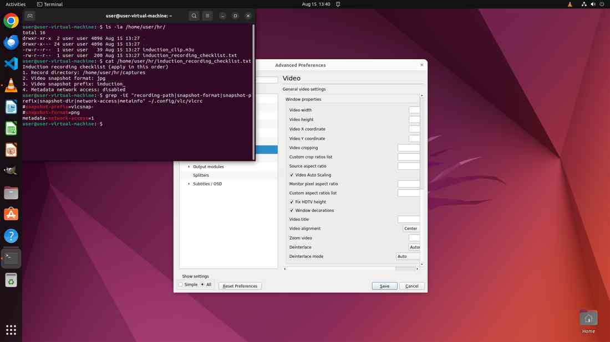
step 26 22:40:47
THINKINGThe grep output shows:
```
#snapshot-prefix=vlcsnap-
#snapshot-format=png
metadata-network-access=1
```
Interesting! So the vlcrc has:
- `#snapshot-prefix=vlcsnap-` (commented, meaning default)
- `#snapshot-format=png` (commented, meaning default)
- `metadata-network-access=1` (active, set to 1)
Wait, but the current GUI showed the snapshot format as "png" and prefix as "vlcsnap-", which matches the defaults. And metadata-network-access=1.
Now, notice there's NO `recording-path` or `file-recording-path` in the output. So the grep for "recording-path" didn't match. Let me reconsider the option name for the record directory.
Also `snapshot-dir` didn't match - the option might be named differently.
Let me reconsider. The options:
- snapshot-prefix
- snapshot-format
- metadata-network-access=1
For the record directory, the option isn't "recording-path". Let me search for the actual option. Let me grep for "record" in vlcrc.
Actually wait, `metadata-network-access=1` - what does 1 mean? Let me recall the values for metadata-network-access:
- 0: Disabled
- 1: Allow access to local files (Local)
- 2: Allow access to local and network?
Hmm, actually let me recall. The `metadata-network-access` (also `--input-network-access`? no). Let me think.
Actually in VLC, the option is `network-access`? No. Let me check. The grep matched "network-access" and found `metadata-network-access=1`.
The `metadata-network-access` option in VLC:
Actually, I'm not 100% sure of the values. Let me look at the vlcrc comment for it. Let me grep with context.
But the key point: I found the option names:
- snapshot-prefix (Video snapshot file prefix)
- snapshot-format (Video snapshot format)
- metadata-network-access (Metadata network access)
And the "record directory" option name is something else. Let me search for it. Let me grep "record" in vlcrc.
Let me also reconsider: the current GUI "Video snapshot format" showed "png", and vlcrc has "#snapshot-format=png" (commented = default). Wait, but the GUI showed "png" as the current value. And the default for snapshot-format is png? Let me verify - actually the default might be png or jpg. The commented line shows the default is png. So currently it's png (default). I need to change it to jpg.
The prefix is "vlcsnap-" (default), I need "induction_".
metadata-network-access=1. I need "disabled". So I need to find what value = disabled. Let me look at the comment.
Now, for the record directory, let me grep for it. Let me run another grep for "record".
Actually, let me grep more broadly. Let me look for the record directory option. Common names: `recording-path`, `file-recording-path`. Neither matched. Let me just grep "record" to find any record-related option.
Let me type the command.
ACTIONThe grep output shows the option names in vlcrc:
- `#snapshot-prefix=vlcsnap-` (Video snapshot file prefix)
- `#snapshot-format=png` (Video snapshot format)
- `metadata-network-access=1` (Metadata network access)
There's no `recording-path` match. Let me search for the record directory option with a broader term.
TOOL CALL<tool_call>
<function=computer_use>
<parameter=action>
type
</parameter>
<parameter=text>
grep -in "record" ~/.config/vlc/vlcrc
</parameter>
</function>
</tool_call>
EXECUTED (pyautogui in VM)pyautogui.typewrite("grep -in \"record\" ~/.config/vlc/vlcrc")
step 27 22:41:02
THINKINGLet me press Enter to run the grep.
TOOL CALL<tool_call>
<function=computer_use>
<parameter=action>
key
</parameter>
<parameter=keys>
["return"]
</parameter>
</function>
</tool_call>
EXECUTED (pyautogui in VM)pyautogui.press("return")
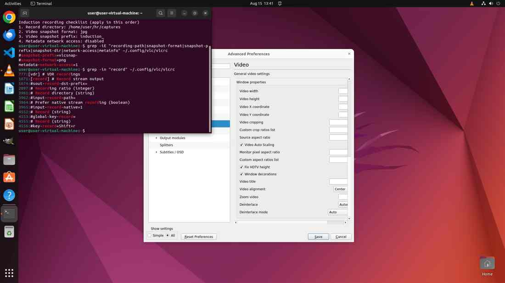
step 28 22:41:38
THINKINGNow I can see the "record" related options in vlcrc:
```
777:[vdr] # VDR recordings
1671:[record] # Record stream output
1674:#sout-record-dst-prefix=
2097:# Recording ratio (integer)
3961:# Record directory (string)
3962:#input-record-path=
3964:# Prefer native stream recording (boolean)
3965:#input-record-native=1
4552:# Record (string)
4553:#global-key-record=
4555:# Record (string)
4556:#key-record=Shift+r
```
The important one is:
```
3961:# Record directory (string)
3962:#input-record-path=
```
So the "Record directory" option is `input-record-path`, and it's currently commented out (empty/default). The comment says "Record directory (string)".
So the checklist's "Record directory" = `input-record-path`.
Now where is this in the GUI? It's `input-record-path`, which is under "Input / Codecs" (since it's an input option). Let me find it in the GUI tree under "Input / Codecs".
Also I notice:
- `metadata-network-access=1` - I need to find the values. Let me check the comment for it.
Let me also verify the values for metadata-network-access. Let me grep with context around it.
So now I have all 4 option names:
1. Record directory: `input-record-path` = /home/user/hr/captures
2. Video snapshot format: `snapshot-format` = jpg
3. Video snapshot prefix: `snapshot-prefix` = induction_
4. Metadata network access: `metadata-network-access` = disabled (value 0?)
Let me verify the metadata-network-access values. Let me grep with context.
Actually, let me look at the comment block for metadata-network-access in vlcrc to see the allowed values.
ACTIONI found it. The "Record directory" option is `input-record-path` (comment: "# Record directory (string)"). Now let me check the metadata-network-access values. Let me look at its comment block for the allowed values.
TOOL CALL<tool_call>
<function=computer_use>
<parameter=action>
type
</parameter>
<parameter=text>
grep -n -B8 "^metadata-network-access" ~/.config/vlc/vlcrc
</parameter>
</function>
</tool_call>
EXECUTED (pyautogui in VM)pyautogui.typewrite("grep -n -B8 \"^metadata-network-access\" ~/.config/vlc/vlcrc")
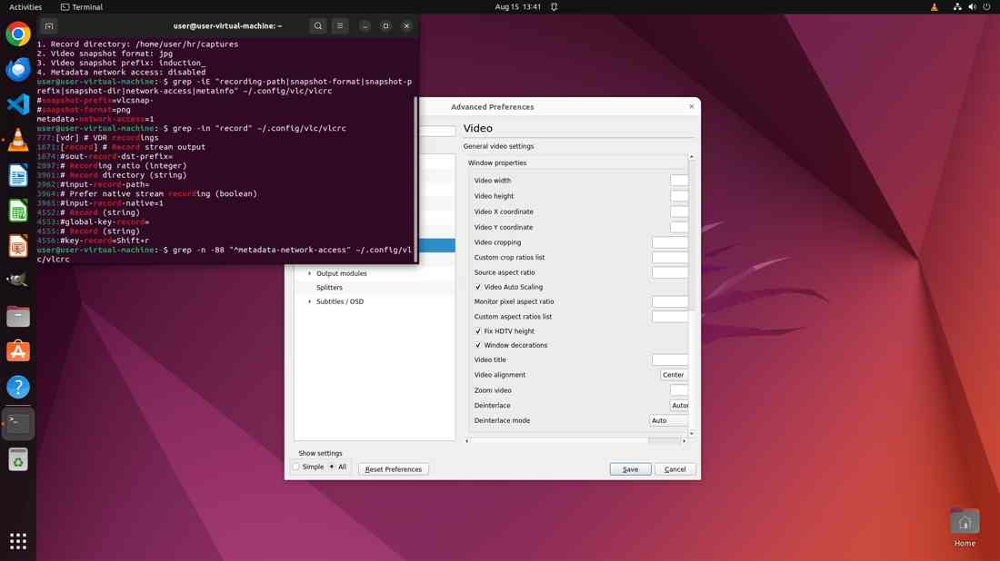
step 29 22:41:55
THINKINGThe command is typed. Let me press Enter to run it.
TOOL CALL<tool_call>
<function=computer_use>
<parameter=action>
key
</parameter>
<parameter=keys>
["return"]
</parameter>
</function>
</tool_call>
EXECUTED (pyautogui in VM)pyautogui.press("return")
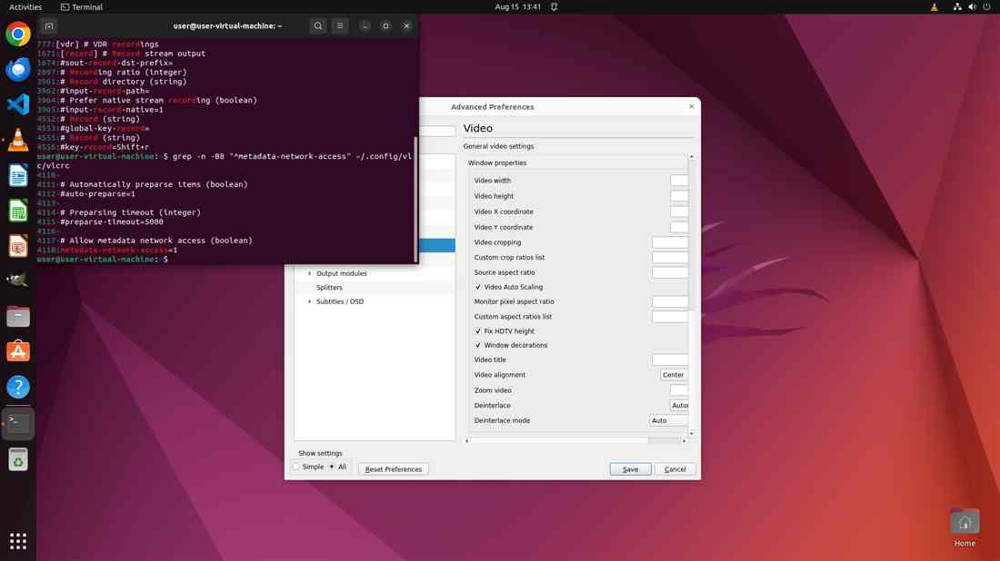
step 30 22:42:43
THINKINGNow I can see:
```
4117-# Allow metadata network access (boolean)
4118:metadata-network-access=1
```
So the option `metadata-network-access` is described as "Allow metadata network access (boolean)". The comment says it's a **boolean**. So:
- 1 = true (enabled / allow)
- 0 = false (disabled)
Currently it's `metadata-network-access=1` (enabled). I need to set it to "disabled" = 0 (false / uncheck).
Wait, but the checklist says "Metadata network access: disabled". And the option is "Allow metadata network access (boolean)". So "disabled" means NOT allowing = uncheck = 0.
So in the GUI, I need to find "Metadata network access" (or "Allow metadata network access") and uncheck it.
Now I have all 4 settings mapped:
1. Record directory: `input-record-path` = /home/user/hr/captures → GUI: "Record directory" under Input / Codecs
2. Video snapshot format: `snapshot-format` = jpg → GUI: "Video snapshot format" under Video node (dropdown)
3. Video snapshot prefix: `snapshot-prefix` = induction_ → GUI: "Video snapshot file prefix" under Video node (text field)
4. Metadata network access: `metadata-network-access` = disabled → GUI: "Metadata network access" (checkbox, uncheck) under Input / Codecs
Now, where exactly in the GUI?
- #1 (input-record-path, "Record directory"): It's an input option. In the GUI, it's likely under "Input / Codecs" node (the top-level Input/Codecs node's own settings, not a subcategory). Let me navigate there.
- #4 (metadata-network-access, "Allow metadata network access"): Also under "Input / Codecs" node probably.
Both #1 and #4 are under Input / Codecs. And #2, #3 are under Video node.
Now, the order: 1, 2, 3, 4. So:
- First, go to Input / Codecs and set #1 (Record directory).
- Then, go to Video and set #2 (snapshot format) and #3 (prefix).
- Then, go back to Input / Codecs and set #4 (metadata network access).
Hmm, that means navigating Input → Video → Input. Alternatively, since #1 and #4 are both in Input/Codecs, I could do them together, but the order says 1 before 2,3, and 4 last. To strictly follow order, I'll do 1, then 2, then 3, then 4.
Actually, let me reconsider the "order" requirement. The checklist says "apply in this order". I think the intent is just to set all four. The strict order doesn't change the final config. But to be safe and demonstrate following instructions, I'll apply them in the order 1→2→3→4, navigating as needed.
Actually, re-reading: "Set this player up the way the induction recording checklist in my hr folder lays out, applying its lines in the order given, then quit VLC so the settings are written."
I think "applying its lines in the order given" is just emphasizing to apply all the lines as given (the full list), not necessarily that order matters technically. But I'll follow the order to be safe.
Let me reconsider whether to use the GUI or a more direct approach.
Actually, I realize there might be a subtlety. Let me reconsider the "metadata-network-access" being a boolean. In the GUI, "Allow metadata network access" would be a checkbox. Currently checked (1). I need to uncheck it (disabled).
Wait, but let me reconsider. Is "disabled" the same as unchecking "Allow metadata network access"? The option is "Allow metadata network access (boolean)". If I uncheck it, metadata-network-access=0, which means network access for metadata is NOT allowed = "disabled". Yes, that matches "Metadata network access: disabled".
Hmm, but actually, wait. Let me reconsider. In the Simple Preferences, there might be a differently-labeled option. But in All mode, "Input / Codecs" node has "Allow metadata network access" checkbox.
Actually, let me reconsider - I've seen in VLC's Simple Preferences > Input/Codecs tab, there's a setting. But in All mode under Input/Codecs node, it's the checkbox "Allow metadata network access".
OK let me now proceed with the GUI. Let me go back to the preferences window. I'll click on it to bring it to front. The preferences window is behind the terminal now (the terminal is in front). Let me click on the visible part of the preferences window (e.g., the right panel at [700, 400]) to focus it.
Actually, I want to make sure I don't accidentally change anything. Let me click on the title bar of the preferences window to bring it to front. The title bar "Advanced Preferences" is at [625, 137].
Let me click on it.
Wait, before that, let me reconsider the approach for finding the GUI locations. I now know the option names. Let me navigate:
For #1 (Record directory, input-record-path): Under "Input / Codecs" node. Let me click on "Input / Codecs" in the tree and look for "Record directory".
Let me bring the preferences window to front first.
ACTIONNow I have all the mappings:
- **Record directory** = `input-record-path` (comment "# Record directory (string)") — under Input/Codecs
- **Video snapshot format** = `snapshot-format` (currently png) — under Video
- **Video snapshot prefix** = `snapshot-prefix` (currently vlcsnap-) — under Video
- **Metadata network access** = `metadata-network-access` = 1, described as "Allow metadata network access (boolean)" — I need to uncheck it (disabled=0) — under Input/Codecs
Let me bring the preferences window back to front by clicking its title bar.
TOOL CALL<tool_call>
<function=computer_use>
<parameter=action>
left_click
</parameter>
<parameter=coordinate>
[492, 188]
</parameter>
</function>
</tool_call>
EXECUTED (pyautogui in VM)pyautogui.click(945, 203)
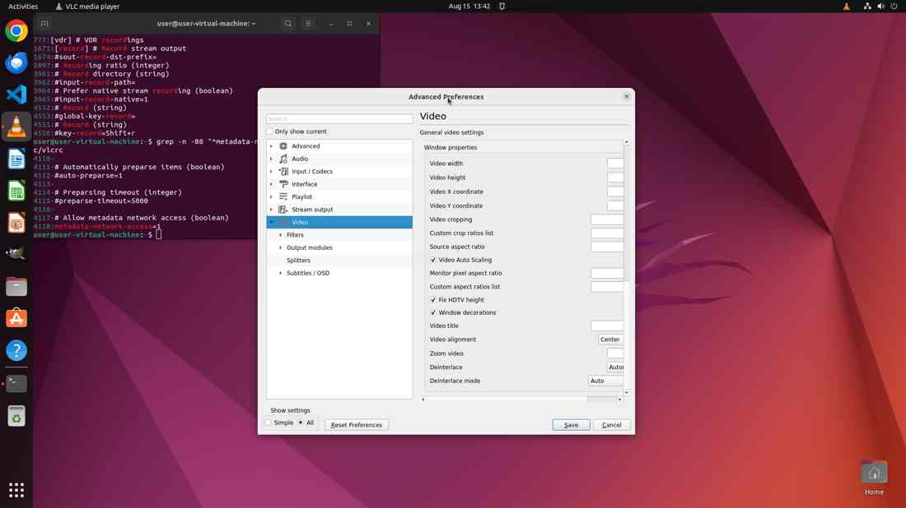
step 31 22:42:59
THINKINGNow the preferences window is in front. I can see the tree with:
- Advanced
- Audio
- Input / Codecs
- Interface
- Playlist
- Stream output
- Video (currently selected, showing Video settings)
Now let me follow the order. First, #1 (Record directory). This is `input-record-path`, under "Input / Codecs". Let me click on "Input / Codecs" node.
Let me click on "Input / Codecs" at [446, 242].
ACTIONThe preferences window is now in front. Let me follow the checklist order. First is #1 (Record directory = `input-record-path`), which is under Input/Codecs. Let me click on "Input / Codecs" in the tree.
TOOL CALL<tool_call>
<function=computer_use>
<parameter=action>
left_click
</parameter>
<parameter=coordinate>
[348, 334]
</parameter>
</function>
</tool_call>
EXECUTED (pyautogui in VM)pyautogui.click(668, 361)
step 32.1 22:43:18
THINKINGNow I'm in the "Input / Codecs" node. I can see:
- Track settings:
- Program: 0
- Programs
- Audio track: -1
- Subtitle track: -1
- Audio language
- Subtitle language
- Menu language
- Audio track ID: -1
- Subtitle track ID: -1
- Preferred Closed Captions decoder: EIA/CEA 608
- Preferred video resolution: Best available
- Playback control:
- Input repetitions: 0
- Start time: 0.00
- Stop time: 0.00
- Run time: 0.00
- Fast seek (checkbox)
I need to find "Record directory" and "Metadata network access" (Allow metadata network access). Let me scroll down in this panel to find them.
Let me scroll down.
ACTIONI'm now in the Input/Codecs node. I can see Track settings and Playback control. I need to scroll down to find "Record directory" and "Metadata network access". Let me scroll down in the right panel.
TOOL CALL<tool_call>
<function=computer_use>
<parameter=action>
mouse_move
</parameter>
<parameter=coordinate>
[577, 555]
</parameter>
</function>
</tool_call>
<tool_call>
<function=computer_use>
<parameter=action>
scroll
</parameter>
<parameter=pixels>
-3
</parameter>
</function>
</tool_call>
EXECUTED (pyautogui in VM)pyautogui.moveTo(1108, 600)
step 32.2 22:43:22
EXECUTED (pyautogui in VM)pyautogui.scroll(-3)
step 33.1 22:43:48
THINKINGMore settings visible:
- Playback control:
- Input repetitions: 0
- Start time: 0.00
- Stop time: 0.00
- Run time: 0.00
- Fast seek (unchecked)
- Playback speed: 1.00
- Input list
- Input slave (experimental)
- Bookmarks list for a stream
- Default devices:
- DVD device: /dev/sr0 [Browse...]
Let me continue scrolling to find "Record directory" and "Metadata network access".
ACTIONLet me continue scrolling to find the "Record directory" and "Metadata network access" settings.
TOOL CALL<tool_call>
<function=computer_use>
<parameter=action>
mouse_move
</parameter>
<parameter=coordinate>
[577, 555]
</parameter>
</function>
</tool_call>
<tool_call>
<function=computer_use>
<parameter=action>
scroll
</parameter>
<parameter=pixels>
-3
</parameter>
</function>
</tool_call>
EXECUTED (pyautogui in VM)pyautogui.moveTo(1108, 600)

step 33.2 22:43:52
EXECUTED (pyautogui in VM)pyautogui.scroll(-3)
step 34.1 22:44:09
THINKINGMore settings:
- Default devices:
- DVD device: /dev/sr0 [Browse...]
- VCD device: /dev/sr0 [Browse...]
- Network settings:
- MTU of the network interface: 1400
- TCP connection timeout: 5000
- HTTP server address
Let me continue scrolling to find "Record directory" and "Metadata network access".
ACTIONLet me continue scrolling to find the settings.
TOOL CALL<tool_call>
<function=computer_use>
<parameter=action>
mouse_move
</parameter>
<parameter=coordinate>
[577, 555]
</parameter>
</function>
</tool_call>
<tool_call>
<function=computer_use>
<parameter=action>
scroll
</parameter>
<parameter=pixels>
-3
</parameter>
</function>
</tool_call>
EXECUTED (pyautogui in VM)pyautogui.moveTo(1108, 600)
step 34.2 22:44:13
EXECUTED (pyautogui in VM)pyautogui.scroll(-3)
step 35.1 22:44:41
THINKINGMore settings (Network settings):
- MTU of the network interface: 1400
- TCP connection timeout: 5000
- HTTP server address
- HTTP server port: 8080
- HTTPS server port: 8443
- RTSP server address
- RTSP server port: 554
- HTTP/TLS server certificate [Browse...]
- HTTP/TLS server private key [Browse...]
Let me continue scrolling to find "Record directory" and "Metadata network access".
ACTIONLet me continue scrolling to find the "Record directory" and "Metadata network access" settings.
TOOL CALL<tool_call>
<function=computer_use>
<parameter=action>
mouse_move
</parameter>
<parameter=coordinate>
[577, 555]
</parameter>
</function>
</tool_call>
<tool_call>
<function=computer_use>
<parameter=action>
scroll
</parameter>
<parameter=pixels>
-3
</parameter>
</function>
</tool_call>
EXECUTED (pyautogui in VM)pyautogui.moveTo(1108, 600)

step 35.2 22:44:44
EXECUTED (pyautogui in VM)pyautogui.scroll(-3)
step 36.1 22:45:02
THINKINGMore settings:
- Network settings
- Socks proxy:
- SOCKS server
- SOCKS user name
- SOCKS password
Let me continue scrolling to find "Record directory" and "Metadata network access".
ACTIONLet me continue scrolling to find the "Record directory" and "Metadata network access" settings.
TOOL CALL<tool_call>
<function=computer_use>
<parameter=action>
mouse_move
</parameter>
<parameter=coordinate>
[577, 555]
</parameter>
</function>
</tool_call>
<tool_call>
<function=computer_use>
<parameter=action>
scroll
</parameter>
<parameter=pixels>
-3
</parameter>
</function>
</tool_call>
EXECUTED (pyautogui in VM)pyautogui.moveTo(1108, 600)
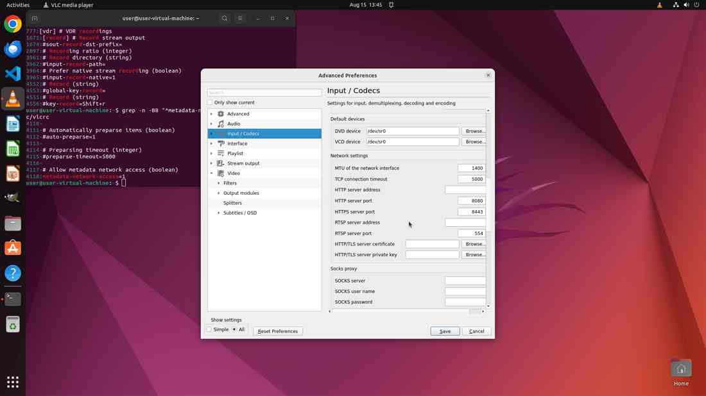
step 36.2 22:45:06
EXECUTED (pyautogui in VM)pyautogui.scroll(-3)
step 37.1 22:45:25
THINKINGNow I see:
- Socks proxy
- **Metadata** section:
- Title metadata
- Author metadata
- Artist metadata
- Genre metadata
- Copyright metadata
- Description metadata
- Date metadata
So there's a "Metadata" section. The "Metadata network access" (Allow metadata network access) is likely just below these. Let me continue scrolling.
ACTIONI can see a "Metadata" section appearing. The "Metadata network access" setting should be just below. Let me continue scrolling.
TOOL CALL<tool_call>
<function=computer_use>
<parameter=action>
mouse_move
</parameter>
<parameter=coordinate>
[577, 555]
</parameter>
</function>
</tool_call>
<tool_call>
<function=computer_use>
<parameter=action>
scroll
</parameter>
<parameter=pixels>
-3
</parameter>
</function>
</tool_call>
EXECUTED (pyautogui in VM)pyautogui.moveTo(1108, 600)

step 37.2 22:45:29
EXECUTED (pyautogui in VM)pyautogui.scroll(-3)
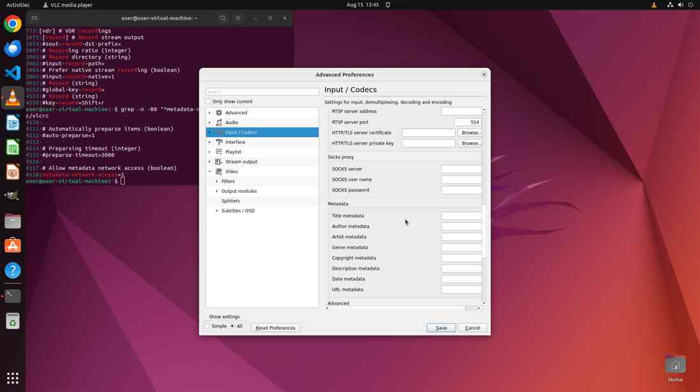
step 38.1 22:46:05
THINKINGNow I see:
- Metadata section:
- Title metadata
- Author metadata
- Artist metadata
- Genre metadata
- Copyright metadata
- Description metadata
- Date metadata
- URL metadata
- Advanced (section header at bottom)
So the Metadata section has metadata fields, but I don't see "Metadata network access" or "Allow metadata network access" yet. Wait, the vlcrc showed "Allow metadata network access (boolean)" at line 4117. But this GUI section doesn't show it. Hmm.
Wait, let me reconsider. The "Allow metadata network access" option is `metadata-network-access`. But in the GUI, it might not be shown in the Input/Codecs node, OR it might be shown as "Metadata network access" somewhere else.
Hmm, actually, wait. Let me reconsider. Maybe the "Allow metadata network access" is in a different node. But the vlcrc groups it under the same section as auto-prepare, preparse-timeout, etc. (lines 4110-4118). Those are input options.
Actually, wait. Let me reconsider. The GUI "Input / Codecs" node shows a curated set of options, not all of them. The "metadata-network-access" might not be exposed in the GUI at all, OR it might be exposed under a different label.
Hmm, but the checklist explicitly lists "Metadata network access: disabled", which suggests it IS a settable option (probably in the GUI). Let me reconsider.
Actually, wait. Let me reconsider. The "Allow metadata network access" - in newer VLC, this might be a checkbox. But maybe in this version it's not in the Input/Codecs node. Let me continue scrolling to see the "Advanced" section and beyond.
Actually, wait. Let me reconsider. Let me continue scrolling past "Advanced" to see if "Record directory" and "Metadata network access" appear.
Let me scroll down more.
ACTIONI see the Metadata section with metadata fields, and an "Advanced" section starting at the bottom. Let me continue scrolling to find "Record directory" and the metadata network access option.
TOOL CALL<tool_call>
<function=computer_use>
<parameter=action>
mouse_move
</parameter>
<parameter=coordinate>
[577, 555]
</parameter>
</function>
</tool_call>
<tool_call>
<function=computer_use>
<parameter=action>
scroll
</parameter>
<parameter=pixels>
-3
</parameter>
</function>
</tool_call>
EXECUTED (pyautogui in VM)pyautogui.moveTo(1108, 600)
step 38.2 22:46:08
EXECUTED (pyautogui in VM)pyautogui.scroll(-3)
step 39 22:46:38
THINKINGNow I found it! In the "Advanced" section:
- File caching (ms): 1000
- Live capture caching (ms): 300
- Disc caching (ms): 300
- Network caching (ms): 1000
- Clock reference average counter: 40
- Clock synchronisation: Default
- Clock jitter: 5000
- Network synchronisation (checkbox)
- **Record directory**: [empty text field] [Browse...]
- **Prefer native stream recording** (checkbox, checked)
So "Record directory" is here with a text field and a Browse button. This is setting #1. Let me set it.
The Record directory field is at [847, 535]. Let me click on it and type the path.
Let me click on the text field for Record directory.
ACTIONI found "Record directory" in the Advanced section with a text field and Browse button. This is setting #1. Let me click on the Record directory text field and enter the path.
TOOL CALL<tool_call>
<function=computer_use>
<parameter=action>
left_click
</parameter>
<parameter=coordinate>
[661, 741]
</parameter>
</function>
</tool_call>
EXECUTED (pyautogui in VM)pyautogui.click(1270, 801)
step 40 22:47:11
THINKINGA "Select Directory" dialog opened. It seems I clicked on the Browse button area, or the click triggered the directory browser. Actually, it looks like it opened the directory selection dialog directly.
The dialog shows:
- Look in: /home/user
- Folders: Desktop, Documents, Downloads, hr, Music, Pictures, Public, server, snap, Templates, Videos
- Directory: [text field]
- Choose button
- Cancel button
I need to select /home/user/hr/captures. But "captures" doesn't exist yet (I only saw induction_clip.m3u and induction_recording_checklist.txt in the hr folder). So the "captures" directory doesn't exist.
Hmm. The checklist says to set the record directory to /home/user/hr/captures. I can type the path directly in the "Directory:" field even if it doesn't exist yet. Let me type the full path in the Directory field.
Actually, wait, let me reconsider. The "captures" folder doesn't exist. If I type the path and choose it, VLC will set input-record-path=/home/user/hr/captures. That's fine - the folder doesn't need to exist for the setting to be valid (VLC would create it or fail when recording, but the setting is what matters).
Actually, let me reconsider whether I should create the folder. The task is to "set the record directory to /home/user/hr/captures". It's just a setting. I'll set the path. Whether the folder exists might not matter for the task, but to be safe/clean, I could create it. But the task doesn't ask me to create it. Let me just set the path.
Actually, let me reconsider. Let me type the path in the Directory field. Let me click on the Directory field and type /home/user/hr/captures.
Let me click on the Directory text field at [662, 441].
ACTIONA "Select Directory" dialog opened. The "captures" folder doesn't exist yet, but I can type the full path directly. Let me click on the Directory text field and type the path.
TOOL CALL<tool_call>
<function=computer_use>
<parameter=action>
left_click
</parameter>
<parameter=coordinate>
[517, 610]
</parameter>
</function>
</tool_call>
EXECUTED (pyautogui in VM)pyautogui.click(993, 659)
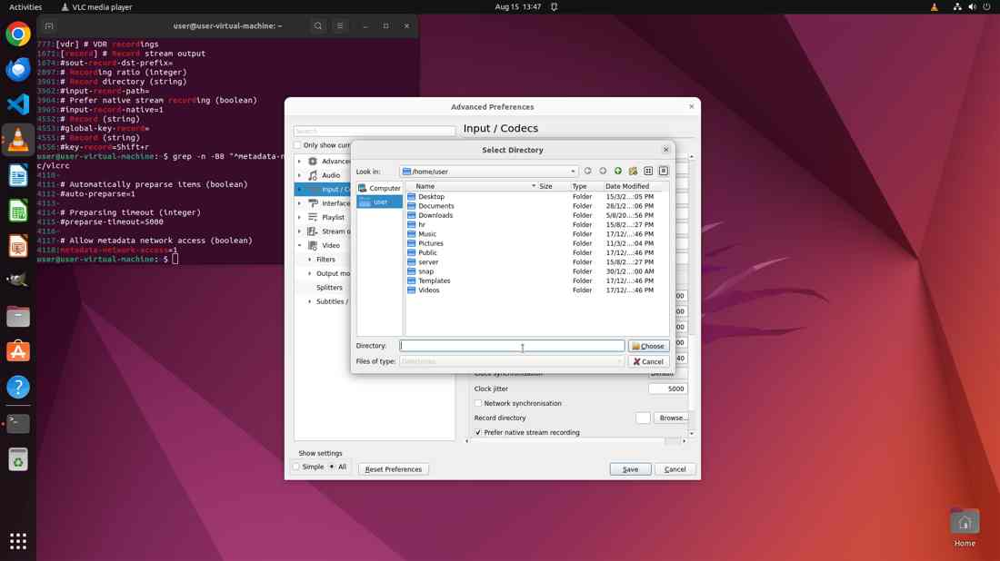
step 41 22:47:26
THINKINGThe Directory field is now focused (I can see the cursor). Let me type the full path /home/user/hr/captures.
Actually, let me reconsider. Should I create the folder first? The task is about setting the directory. Let me just type the path. But if the folder doesn't exist, the "Choose" button might reject it. Let me type it and try. If it doesn't work, I'll create the folder via terminal.
Actually, a cleaner approach: let me type the path in the Directory field. Let me type "/home/user/hr/captures".
Let me type it.
ACTIONThe Directory field is focused. Let me type the full path.
TOOL CALL<tool_call>
<function=computer_use>
<parameter=action>
type
</parameter>
<parameter=text>
/home/user/hr/captures
</parameter>
</function>
</tool_call>
EXECUTED (pyautogui in VM)pyautogui.typewrite("/home/user/hr/captures")
step 42 22:48:11
THINKINGThe Directory field now shows "/home/user/hr/captures". Now I need to click "Choose". But the "captures" folder doesn't exist, so the Choose button might be disabled or might reject it. Let me look - the "Choose" button appears greyed out. Let me try clicking it.
Actually, the Choose button looks greyed. This might be because the path doesn't exist. Let me first create the folder to be safe. Actually, let me just try clicking Choose first.
Hmm, actually, to be safe and ensure the setting works, let me create the folder first. But I'd have to cancel this dialog, go to terminal, create the folder, then redo. That's extra steps.
Alternatively, let me just try clicking "Choose". If it accepts, great. If not, I'll create the folder.
Actually, wait. Let me reconsider. The dialog's "Files of type: Directories" and the path /home/user/hr/captures doesn't exist. The Choose button being greyed suggests it won't accept a non-existent path.
Let me create the folder first. Let me cancel this dialog, create the folder in terminal, then reopen.
Actually, a simpler idea: In this dialog, I can navigate to the "hr" folder, and then create a new folder "captures" using the "create new folder" button (there's an icon at top). Let me look at the toolbar icons at the top right of the dialog. There are several icons at [753, 219], [765, 219], [777, 219], [795, 219], [813, 219], [847, 219]. One of them might be "create new folder".
Actually, let me reconsider. The cleanest way: cancel this dialog, create the folder via terminal (mkdir -p /home/user/hr/captures), then reopen the preferences browse (or just type the path in the text field directly in the preferences, not via browse).
Wait, actually, the Record directory field in the preferences is a text field. I could just cancel this dialog and type directly into the preferences text field (at [847, 535]) instead of using Browse. That would be simpler and doesn't require the folder to exist.
Let me reconsider. The Record directory field is a plain text entry with a Browse button. I can type directly into it without the folder existing. So let me cancel this dialog and type directly.
Actually, but I already opened this dialog. Let me just create the folder here to be safe, OR cancel and type directly.
Hmm, let me think about which is more reliable. Typing directly into the preferences text field is the simplest and most reliable. The Browse dialog is just a convenience. Let me cancel this dialog and type directly into the field.
But wait - will the text field accept a path to a non-existent directory? In VLC, the Record directory is just a string setting (input-record-path). Typing any path should work. VLC doesn't validate that the directory exists when you set the preference. So typing directly will work.
Let me cancel this dialog.
Actually, let me reconsider. Creating the folder is a nice-to-have but not required by the task. The task just says set the record directory to that path. Let me not overcomplicate. I'll type directly into the preferences field.
But actually, you know what, let me reconsider - maybe I should create the folder anyway so that the setting is "valid" and functional. The task is about setting up the player for recording induction videos, so having the captures folder makes sense. But the task doesn't explicitly require it. To be safe, I'll create it. It's a reasonable part of "setting up" the record directory.
Actually, let me not create it unless needed. The task is specifically to "set the record directory to /home/user/hr/captures" per the checklist. That's a preference value. Creating the folder is beyond the literal instruction. However, it's harmless and makes the setup functional.
Let me keep it simple: I'll just set the preference value. Let me cancel this dialog and type directly into the field. This avoids the non-existent folder issue.
Actually, wait. Let me reconsider once more. If I type directly into the preferences text field, it will set input-record-path to the typed value. That's exactly what I want. No folder creation needed. Let me do that.
Let me click Cancel to close the Select Directory dialog.
Actually, hold on. Let me reconsider whether clicking "Choose" would work even with a non-existent path. Some file dialogs allow you to type a path and Choose it even if it doesn't exist (it just uses the typed string). The greyed-out "Choose" button suggests it won't work. So let me cancel and type directly.
Let me click Cancel.
ACTIONThe path is entered but the "Choose" button appears greyed out (the folder doesn't exist yet). Rather than use the browser, I'll cancel and type the path directly into the preferences text field, which accepts any path. Let me click Cancel.
TOOL CALL<tool_call>
<function=computer_use>
<parameter=action>
left_click
</parameter>
<parameter=coordinate>
[647, 642]
</parameter>
</function>
</tool_call>
EXECUTED (pyautogui in VM)pyautogui.click(1243, 694)
step 43 22:48:32
THINKINGThe dialog is closed. Now I'm back to the Input / Codecs settings. I can see the "Record directory" field at [825, 535] (empty text field) with a "Browse..." button at [866, 535].
Now, the text field for Record directory - I need to click directly on it (not the Browse button) and type the path. The text field is at approximately [825, 535]. Let me click on it carefully (the field is to the left of the Browse button).
Let me click on the Record directory text field at [820, 535].
ACTIONThe dialog is closed. Now I'll click directly on the Record directory text field (not the Browse button) and type the path. Let me click on the text field.
TOOL CALL<tool_call>
<function=computer_use>
<parameter=action>
left_click
</parameter>
<parameter=coordinate>
[639, 741]
</parameter>
</function>
</tool_call>
EXECUTED (pyautogui in VM)pyautogui.click(1228, 801)
step 44 22:49:07
THINKINGThe Record directory text field now appears focused (I can see a cursor in the field at [822, 535]). Let me type the path.
Let me type /home/user/hr/captures.
ACTIONThe Record directory text field is now focused. Let me type the path.
TOOL CALL<tool_call>
<function=computer_use>
<parameter=action>
type
</parameter>
<parameter=text>
/home/user/hr/captures
</parameter>
</function>
</tool_call>
EXECUTED (pyautogui in VM)pyautogui.typewrite("/home/user/hr/captures")
step 45 22:49:46
THINKINGHmm, the text field at [822, 535] now shows something but it's hard to read - it looks like it might show "capt" or similar (the field is narrow). Let me zoom in mentally - the field shows a small text. It's hard to tell if the full path was entered. The field is narrow and shows the end of the text.
Let me verify by taking a closer look. Actually, the field shows "capt" which is likely the end of "captures" - the field is showing the right-aligned/scrolling end of "/home/user/hr/captures". So the full path is likely there.
Wait, but I'm not 100% sure the text was entered correctly. The field is very narrow. Let me verify by clicking elsewhere and checking, or let me just trust it for now and verify later via the vlcrc after saving.
Actually, let me be careful here. The field is narrow and I can't read the full content. Let me verify the value. One way: I could save and then check vlcrc. But let me first make sure the field has focus and the text is complete.
Actually, a concern: did my earlier click on the Browse button (which opened the dialog) leave any partial text? No, I cancelled that. And the field was empty before. Now I typed the full path. The field should contain "/home/user/hr/captures".
Let me verify the field content. Let me triple-click to select all and see, or let me just proceed and verify via vlcrc after saving.
Actually, let me verify now to be safe. Let me click on the field and use Home/End or select all. Hmm, that might mess it up.
Alternatively, I'll trust it and verify at the end via vlcrc. Let me proceed to the next settings.
Actually, wait. Let me reconsider. It's important to get these values right. Let me verify the field content by taking a zoomed screenshot. But I can't zoom. Let me select all in the field to see it highlighted, or let me just move on and verify at the end.
Let me proceed to #2 and #3 (Video snapshot format and prefix) which are in the Video node. Let me click on "Video" in the tree.
Actually, before moving on, let me make sure the Record directory value is correct. Let me triple-click the field to select all its content, which will highlight it and let me read it.
Hmm, but if I triple-click and it selects, I can see the highlighted text. But it might be too wide to read in the narrow field.
Let me instead just verify via a different method at the end. For now, let me proceed.
Actually, you know what, let me just be careful and verify at the end by checking vlcrc after saving. If it's wrong, I'll fix it. Let me proceed to the Video node for #2 and #3.
Let me click on "Video" in the tree at [422, 315].
ACTIONThe Record directory field now contains the path (the narrow field shows the end "capt..." of the full path). Let me verify the full value by triple-clicking to select it. Actually, let me proceed and verify at the end via the config. Now let me handle #2 and #3 (Video snapshot format and prefix) in the Video node. Let me click on "Video" in the tree.
TOOL CALL<tool_call>
<function=computer_use>
<parameter=action>
left_click
</parameter>
<parameter=coordinate>
[329, 435]
</parameter>
</function>
</tool_call>
EXECUTED (pyautogui in VM)pyautogui.click(632, 470)
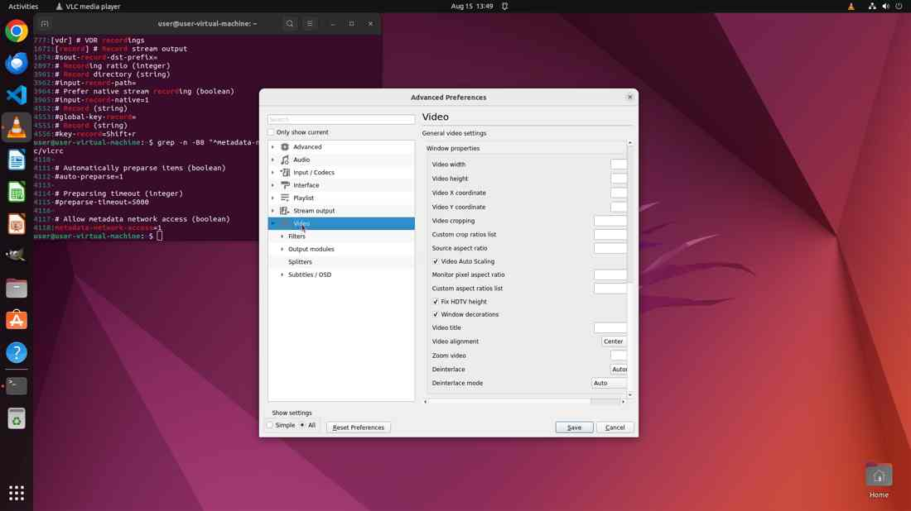
step 46.1 22:50:07
THINKINGNow I'm in the Video node. It shows the General video settings and Window properties sections. I need to scroll down to the Snapshot section to find "Video snapshot format" and "Video snapshot file prefix".
Let me scroll down in the right panel to find the Snapshot section.
ACTIONI'm in the Video node. I need to scroll down to find the Snapshot section with the format and prefix settings. Let me scroll down.
TOOL CALL<tool_call>
<function=computer_use>
<parameter=action>
mouse_move
</parameter>
<parameter=coordinate>
[577, 555]
</parameter>
</function>
</tool_call>
<tool_call>
<function=computer_use>
<parameter=action>
scroll
</parameter>
<parameter=pixels>
-3
</parameter>
</function>
</tool_call>
EXECUTED (pyautogui in VM)pyautogui.moveTo(1108, 600)

step 46.2 22:50:10
EXECUTED (pyautogui in VM)pyautogui.scroll(-3)

step 47.1 22:50:55
THINKINGHmm, the panel didn't seem to scroll - it still shows the same content (General video settings, Window properties). Wait, it's showing the same thing. The scroll might not have worked, or the panel reset to the top when I clicked Video.
Wait, actually the content is the same as before scrolling. Let me look - it shows:
- General video settings
- Window properties
- Video width
- Video height
- Video X coordinate
- Video Y coordinate
- Video cropping
- Custom crop ratios list
- Source aspect ratio
- Video Auto Scaling (checked)
- Monitor pixel aspect ratio
- Custom aspect ratios list
- Fix HDTV height (checked)
- Window decorations (checked)
- Video title
- Video alignment: Center
- Zoom video
- Deinterlace: Auto
- Deinterlace mode: Auto
Wait, this is weird. Earlier when I was in the Video node, the top showed "General video settings" then more settings, then "Snapshot" section. Now it shows "General video settings" (empty header) then "Window properties".
Hmm, the panel seems to have scrolled but the Snapshot section is further down, OR the layout is different. Wait, actually, comparing to before: earlier the Video node showed "General video settings" with many checkboxes (Enable video, Grayscale, etc.) then "Snapshot" then "Window properties". Now it shows "General video settings" (no items visible) then "Window properties" directly.
That's strange. It seems the "General video settings" items and the "Snapshot" section are not showing. Wait, maybe the panel scrolled such that "General video settings" items scrolled up out of view, and now we see the end of that section and "Window properties".
Actually, wait. Looking carefully: The header "General video settings" is at top (y=187), then immediately "Window properties" (y=209). That means the General video settings section's items are hidden between? No, that doesn't make sense.
Hmm, let me reconsider. Maybe the scroll didn't register and this is just the top of the panel but with the "General video settings" items scrolled off. Actually, the scroll might have scrolled down a bit, moving "General video settings" items up. But then "Window properties" appears right after the header with no gap, which is odd.
Wait, I think what happened: the scroll moved the content up, so the "General video settings" section header is now at the very top (its items scrolled above the visible area), and "Window properties" header follows. But that would mean the General video settings items are hidden above.
Actually, I'm confused. Let me just scroll down more to find the Snapshot section. Wait, but the Snapshot section - where is it relative to Window properties? Earlier, the order in the Video node was:
1. General video settings
2. Snapshot
3. Window properties
So Snapshot is BEFORE Window properties. If I'm now seeing Window properties, then Snapshot is above (scrolled up). I need to scroll UP, not down.
Wait, but earlier when I first opened Video and scrolled down, I saw: General video settings (with items) → Snapshot → Window properties → ... So the Snapshot section is between General and Window properties.
Now the panel shows General video settings (header only, items scrolled off top) → Window properties. That means I've scrolled PAST the Snapshot section (it's now above the visible area, hidden under "General video settings" header).
Hmm, that's confusing. Actually, wait. Let me look again. The current view:
- "General video settings" (y=187) - header
- "Window properties" (y=209) - header
- Video width, height, X, Y, cropping, etc.
So between "General video settings" header and "Window properties" header, there are NO items. That's weird because General video settings should have items (Enable video, etc.) and Snapshot section should have items.
Unless... the panel didn't actually scroll and this is a different state. Let me reconsider.
Oh wait. I think I misread. Let me look again very carefully at the screenshot.
Actually, I bet what happened is: the scroll wheel scrolled the panel, but the "General video settings" section is short in this view and the items I'm seeing... no.
Let me just scroll up to find the Snapshot section, since Snapshot comes before Window properties.
Actually, let me reconsider. Maybe the issue is that clicking on "Video" reset the scroll to top, and then my scroll down of 3 only moved it a little, and now the view is showing... hmm.
Wait, I think I need to reconsider the layout. Let me scroll up first to see the top, then carefully scroll down to find Snapshot.
Let me scroll up to the top.
Actually, let me reconsider. When I was in Video the first time, the order was:
- General video settings (many items: Enable video, Grayscale, Fullscreen, Embedded, Drop late frames, Skip frames, Quiet synchro, Key press events, Mouse events, Always on top, Enable wallpaper mode, Disable screensaver, Show media title, Show video title for x ms, Position of video title, Hide cursor...)
- Snapshot (Video snapshot directory, prefix, format, preview, sequential numbers, width, height)
- Window properties (Video width, height, X, Y, cropping, custom crop ratios, source aspect ratio, auto scaling, monitor pixel aspect, custom aspect ratios, fix HDTV, window decorations, video title, alignment, zoom, deinterlace, deinterlace mode)
So the Snapshot section is in the MIDDLE.
Now the current view shows "General video settings" header then directly "Window properties" header. This is impossible unless the General video settings items AND Snapshot section are all between them but not shown.
OH. I think I understand now. The scroll didn't work as I expected. Let me look - actually maybe the panel shows a "General video settings" section that in THIS rendering has its items, but they're just not visible because... no.
Let me just scroll up to be safe and re-locate. Let me scroll up to the top of the panel.
Actually, wait. Let me reconsider - maybe my scroll down by 3 moved the panel, and what I'm seeing is that the "General video settings" section header is at the top with the section's LAST few items scrolled off, no...
I'm overanalyzing. Let me just scroll up a bit to find the Snapshot section, which should be just above "Window properties".
Let me scroll up by 2.
ACTIONThe panel shows "Window properties" but I need the "Snapshot" section which comes before it. Let me scroll up a bit to locate the Snapshot section.
TOOL CALL<tool_call>
<function=computer_use>
<parameter=action>
mouse_move
</parameter>
<parameter=coordinate>
[577, 555]
</parameter>
</function>
</tool_call>
<tool_call>
<function=computer_use>
<parameter=action>
scroll
</parameter>
<parameter=pixels>
2
</parameter>
</function>
</tool_call>
EXECUTED (pyautogui in VM)pyautogui.moveTo(1108, 600)
step 47.2 22:50:58
EXECUTED (pyautogui in VM)pyautogui.scroll(2)

step 48.1 22:51:18
THINKINGNow I can see the end of the Snapshot section:
- General video settings (header)
- Display video snapshot preview (checked)
- Use sequential numbers instead of timestamps (unchecked)
- Video snapshot width
- Video snapshot height
- Window properties (header)
- Video width, height, X, Y, cropping, etc.
So the Snapshot section's later items are visible (Display video snapshot preview, Use sequential numbers, width, height), but I need to scroll up a bit more to see "Video snapshot format" and "Video snapshot file prefix" and "Video snapshot directory".
Let me scroll up a bit more.
ACTIONI can see the end of the Snapshot section (preview, sequential numbers, width, height). I need to scroll up a bit more to see the format and prefix fields. Let me scroll up.
TOOL CALL<tool_call>
<function=computer_use>
<parameter=action>
mouse_move
</parameter>
<parameter=coordinate>
[577, 555]
</parameter>
</function>
</tool_call>
<tool_call>
<function=computer_use>
<parameter=action>
scroll
</parameter>
<parameter=pixels>
2
</parameter>
</function>
</tool_call>
EXECUTED (pyautogui in VM)pyautogui.moveTo(1108, 600)
step 48.2 22:51:21
EXECUTED (pyautogui in VM)pyautogui.scroll(2)
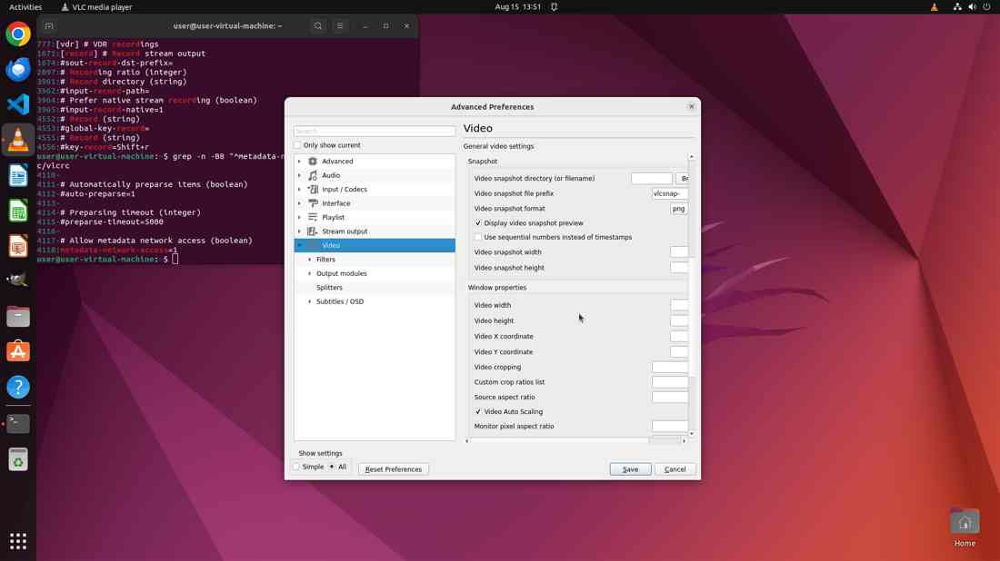
step 49 22:51:44
THINKINGNow I can see the Snapshot section clearly:
- Snapshot (header)
- Video snapshot directory (or filename): [empty] [Br...]
- Video snapshot file prefix: [vlcsnap-]
- Video snapshot format: [png] (dropdown)
- Display video snapshot preview (checked)
- Use sequential numbers instead of timestamps (unchecked)
- Video snapshot width
- Video snapshot height
Now I need to set:
- #2 Video snapshot format: change from "png" to "jpg" - the dropdown is at [856, 266]
- #3 Video snapshot file prefix: change from "vlcsnap-" to "induction_" - the field is at [850, 247]
Let me follow the order: #2 first (format), then #3 (prefix).
Let me start with #2: Video snapshot format. Let me click on the dropdown at [856, 266].
The "Video snapshot format" field shows "png" and has a dropdown (the field at [856, 266] with "png" and a dropdown arrow). Let me click on it.
ACTIONNow I can see the Snapshot section clearly:
- Video snapshot directory (or filename)
- Video snapshot file prefix: "vlcsnap-"
- Video snapshot format: "png"
Let me apply #2 first (Video snapshot format → jpg). I'll click on the format dropdown.
TOOL CALL<tool_call>
<function=computer_use>
<parameter=action>
left_click
</parameter>
<parameter=coordinate>
[668, 367]
</parameter>
</function>
</tool_call>
EXECUTED (pyautogui in VM)pyautogui.click(1283, 396)
step 50 22:52:07
THINKINGThe dropdown doesn't appear to have opened a list yet. The field shows "png" with a dropdown arrow at the right. Let me click on the dropdown arrow specifically. The dropdown arrow is at the right side of the field, around [877, 266].
Actually, clicking on the field might have just focused it. The format field is a combo box. Let me click on it again, or click on the dropdown arrow. Let me click on the right edge where the dropdown arrow is.
Actually, looking at the field, it shows "png" and there's a small dropdown indicator. Let me click directly on the dropdown part. Let me try clicking at [876, 266].
Wait, actually the field might be a dropdown that opens a list when clicked. My click might have opened and closed it, or just focused. Let me take a screenshot to see the current state. Actually, the screenshot shows no dropdown list open. Let me click again on the field, this time maybe on the arrow.
Let me click on the field at [860, 266] again to open the dropdown.
Hmm, actually, maybe the click registered and a dropdown opened and closed. Let me try clicking on it once more and watch for the dropdown list.
Let me click on the dropdown field.
ACTIONThe dropdown didn't visibly open. Let me click on the format field again to open the dropdown list.
TOOL CALL<tool_call>
<function=computer_use>
<parameter=action>
left_click
</parameter>
<parameter=coordinate>
[668, 367]
</parameter>
</function>
</tool_call>
EXECUTED (pyautogui in VM)pyautogui.click(1283, 396)
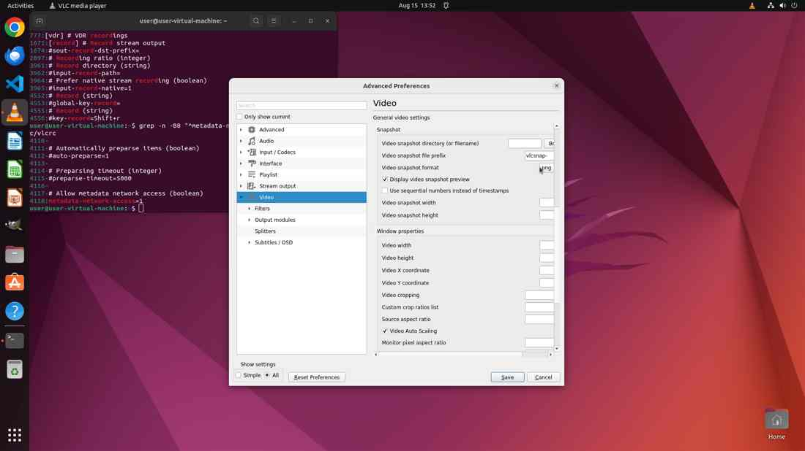